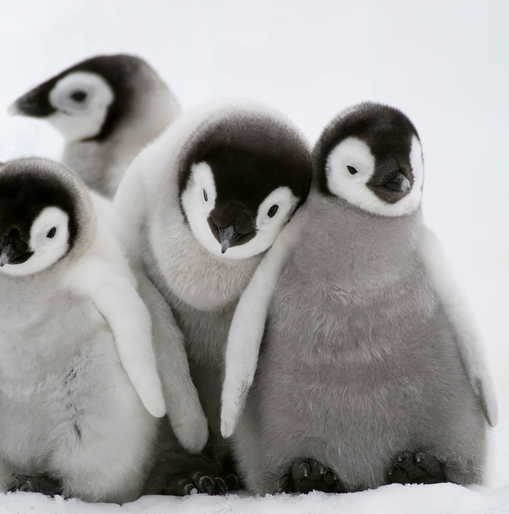

Eagle is the common name for the golden eagle, bald eagle, and other birds of prey in the family of the Accipitridae. Eagles belong to several groups of genera, some of which are closely related. True eagles comprise the genus Aquila. Most of the 68 species of eagles are from Eurasia and Africa.[1] Outside this area, just 14 species can be found—two in North America, nine in Central and South America, and three in Australia. Eagles are not a natural group but denote essentially any kind of bird of prey large enough to hunt sizeable (about 50 cm long or more overall) vertebrates. Etymology The word "eagle" is borrowed into English from Anglo-Norman: eagle and Middle French: aigle, both derived ultimately from Latin: aquila ("eagle"). It is cognate with terms such as French: aigle, Portuguese: águia and Spanish: águila.[2] It is broadly synonymous with the less common English term "erne" or "earn", deriving from Middle English: ern, from Old English: earn, in which it acts as the usual word for the bird. The Old English term is turn derived from Proto-Germanic: *arnaz and is cognate with other synonymous words in Germanic languages such as Swedish: örn, German: Aar and Gothic: ara. Through the Proto-Indo-European root, it is further related to words such as ὄρνις ("bird") and Lithuanian: erelis ("eagle"). Although "erne" can be used to refer to any eagle, it is most commonly used for the golden eagle or sea-eagle.[3][4] Description Eagles are large, powerfully-built birds of prey, with heavy heads and beaks. Even the smallest eagles, such as the booted eagle (Hieraaetus pennatus), which is comparable in size to a common buzzard (Buteo buteo) or red-tailed hawk (B. jamaicensis), have relatively longer and more evenly broad wings, and more direct, faster flight, despite the reduced size of their aerodynamic feathers. Most eagles are larger than any other raptors, apart from some vultures. The smallest species of eagle is the Great Nicobar serpent eagle (Spilornis klossi), at 450 g (1 lb) and 40 cm (16 in). The largest species are discussed below. Like all birds of prey, eagles have very large hooked beaks for ripping flesh from their prey, strong, muscular legs, and powerful talons. The beak is typically heavier than that of most other birds of prey. Eagles' eyes are extremely powerful. It is estimated that the wedge-tailed eagle has a visual acuity twice that of a typical human.[5][6][7] This acuity enables eagles to spot potential prey from a very long distance. This keen eyesight is primarily attributed to their extremely large pupils which ensure minimal diffraction (scattering) of the incoming light. Like most diurnal raptors, eagles have little ability to see ultraviolet light.[8] The female of all known species of eagles is larger than the male.[9][10] Eagles normally build their nests, called eyries, in tall trees or on high cliffs. Many species lay two eggs, but the older, larger chick frequently kills its younger sibling once it has hatched. The parents take no action to stop the killing.[11][12] It is said[by whom?] that eagles fly above clouds but this is not true.[citation needed] Eagles fly during storms and glide from the wind's pressure. This saves the bird's energy. Due to the size and power of many eagle species, they are ranked at the top of the food chain as apex predators in the avian world. The type of prey varies by genus. The Haliaeetus and Icthyophaga eagles prefer to capture fish, though the species in the former often capture various animals, especially other water birds, and are powerful kleptoparasites of other birds. The snake and serpent eagles of the genera Circaetus, Terathopius, and Spilornis predominantly prey on the great diversity of snakes found in the tropics of Africa and Asia. The eagles of the genus Aquila are often the top birds of prey in open habitats, taking almost any medium-sized vertebrate they can catch. Where Aquila eagles are absent, other eagles, such as the buteonine black-chested buzzard-eagle of South America, may assume the position of top raptorial predator in open areas. Many other eagles, including the species-rich genus Spizaetus, live predominantly in woodlands and forests. These eagles often target various arboreal or ground-dwelling mammals and birds, which are often unsuspectingly ambushed in such dense, knotty environments. Hunting techniques differ among the species and genera, with some individual eagles having engaged in quite varied techniques based on their environment and prey at any given time. Most eagles grab prey without landing and take flight with it, so the prey can be carried to a perch and torn apart.[13] The bald eagle is noted for having flown with the heaviest load verified to be carried by any flying bird, since one eagle flew with a 6.8 kg (15 lb) mule deer fawn.[14][15] However, a few eagles may target prey considerably heavier than themselves; such prey is too heavy to fly with, thus it is either eaten at the site of the kill or taken in pieces back to a perch or nest. Golden and crowned eagles have killed ungulates weighing up to 30 kg (66 lb) and a martial eagle even killed a 37 kg (82 lb) duiker, 7–8 times heavier than the preying eagle.[13]: 67–68 [16] Authors on birds David Allen Sibley, Pete Dunne, and Clay Sutton described the behavioral difference between hunting eagles and other birds of prey thus (in this case the bald and golden eagles as compared to other North American raptors):[17] An Eagle named in honor of Abraham Lincoln and was the mascot of 8th Wisconsin Infantry Regiment, at the time of the U.S. Centennial They have at least one singular characteristic. It has been observed that most birds of prey look back over their shoulders before striking prey (or shortly thereafter); predation is after all a two-edged sword. All hawks seem to have this habit, from the smallest kestrel to the largest Ferruginous – but not the Eagles. Among the eagles are some of the largest birds of prey: only the condors and some of the Old World vultures are markedly larger. It is regularly debated[according to whom?] which should be considered the largest species of eagle. They could be measured variously in total length, body mass, or wingspan. Different lifestyle needs among various eagles result in variable measurements from species to species. For example, many forest-dwelling eagles, including the very large harpy eagle, have relatively short wingspans, a feature necessary for being able to maneuver in quick, short bursts through densely forested habitats.[13] Eagles in the genus Aquila, found almost exclusively in open country, are noted for their ability to soar, and have relatively long wings for their size.[13] These lists of the top five eagles are based on weight, length, and wingspan, respectively. Unless otherwise noted by reference, the figures listed are the median reported for each measurement in the guide Raptors of the World[18] in which only measurements that could be personally verified by the authors were listed.[13] Rank Common name Scientific name Body mass 1 Steller's sea eagle Haliaeetus pelagicus 6.95 kg (15+1⁄4 lb) (Average Weight)[13][1] 2 Harpy eagle Harpia harpyja 6.5 kg (14+1⁄4 lb) (Average Weight)[13][1] 3 Philippine eagle Pithecophaga jefferyi 6.35 kg (14 lb) (Average Weight)[13][1] 4 White-tailed eagle Haliaeetus albicilla 4.8 kg (10+1⁄2 lb) (Average Weight)[1] 5 Martial eagle Polemaetus bellicosus 4.6 kg (10+1⁄4 lb) (Average Weight)[1] Rank Common name Scientific name Total length 1 Philippine eagle Pithecophaga jefferyi 100 cm (3 ft 3 in)[19] 2 Harpy eagle Harpia harpyja 98.5 cm (3 ft 3 in) 3 Wedge-tailed eagle Aquila audax 95.5 cm (3 ft 2 in) 4 Steller's sea eagle Haliaeetus pelagicus 95 cm (3 ft 1 in) 5 Crowned eagle Stephanoaetus coronatus 87.5 cm (2 ft 10 in) Rank Common name Scientific name Median wingspan 1 White-tailed eagle Haliaeetus albicilla 218.5 cm (7 ft 2 in) 2 Steller's sea eagle Haliaeetus pelagicus 212.5 cm (7 ft 0 in) 3 Wedge-tailed eagle Aquila audax 210 cm (6 ft 11 in)[20][21] 4 Golden eagle Aquila chrysaetos 207 cm (6 ft 9 in) 5 Martial eagle Polemaetus bellicosus 206.5 cm (6 ft 9 in) Habitat The eagles are generally distributed in all types of habitats and nearly all parts of the world. The birds can be found in northern tundra to tropical rainforests and deserts. In North America, bald eagles and golden eagles are very common. Distribution Australasian Australia: wedge-tailed eagle (range extends into southern New Guinea), white-bellied sea-eagle (range extends into Asia), little eagle. New Guinea: Papuan eagle, white-bellied sea-eagle, pygmy eagle. Nearctic (USA and Canada): golden eagle (also found in Palearctic), bald eagle. Neotropical (Central and South America): Spizaetus (four species), solitary eagles (two spp.), harpy eagle, crested eagle, black-chested buzzard-eagle. Palearctic (Europe, Northern Africa, Asia without South Asia and Southeast Asia) Eurasia: Golden eagle,[22] White-tailed eagle. Subsaharan Africa: African fish eagle, Martial Eagle, Crowned eagle, Verreaux's eagle, Tawny eagle, Long-crested eagle Groups Eagles are often informally divided into four groups.[a][24] The snake eagles are placed in the subfamily Circaetinae. The fish eagles, booted eagles, and harpy eagles have traditionally been placed in the subfamily Buteoninae together with the buzzard-hawks (buteonine hawks) and harriers. Some authors may treat these groups as tribes of the Buteoninae; Lerner & Mindell[25] proposed separating the eagle groups into their own subfamilies of Accipitridae. Fish eagles Sea eagles or fish eagles take fish as a large part of their diets, either fresh or as carrion. Proposed subfamily Haliaeetinae. Genera: Haliaeetus, Icthyophaga. Some authors include Gypohierax angolensis, the "vulturine fish eagle" (also called the palm-nut vulture) in this group.[24] However, genetic analyses indicate it is related to a grouping of Neophron–Gypaetus–Eutriorchis (Egyptian vulture, bearded vulture (lammergeier), and Madagascar serpent eagle).[26] The fish eagles have a close genetic relationship with Haliastur and Milvus; the whole group is only distantly related to the Buteo group.[26] Fish eagles exist in every continent throughout the world, except for South America.[27] Although fish eagles can be found in many different places around the world, they have been classified as "Near Threatened". Reasons such as overfishing, pollution, habitat destruction, and the use of pesticides have contributed to the species' rapid population drop.[28] Booted eagles Booted eagles or "true eagles"[24][29] have feathered tarsi (lower legs). Tribe Aquililae or proposed subfamily Aquilinae. Genera: Aquila, Hieraaetus; Spizaetus, Oroaetus, Spizastur; Nisaetus;[26] Ictinaetus, Lophoaetus; Polemaetus; and Stephanoaetus.[24][29] See comments under eagle species for changes to the composition of these genera. Snake eagles Most snake or serpent eagles, as the name suggests, primarily prey on snakes. Subfamily Circaetinae. Genera: Circaetus, Spilornis, Dryotriorchis, Terathopius.[24] Eutriorchis (subfamily Gypaetinae or Circaetinae). Despite filling the niche of a snake eagle, genetic studies suggest that the Madagascar serpent eagle (Eutriorchis) is not related to them.[26] Over several decades, a great deal of research has been done on the Snake-eagle's diet, which is mainly made up of reptiles, especially snakes. When it comes to catching snakes, it is generally accepted that the bird exhibits generalist feeding behavior, which means it does not hunt down specific types of snakes but rather feeds on them depending on their availability in the wild.[30] Harpy eagles Harpy eagles[24] or "giant forest eagles"[23] are large eagles that inhabit tropical forests. The group contains two to six species, depending on the author. Although these birds occupy similar niches and have traditionally been grouped, they are not all related: the solitary eagles are related to the black hawks and the Philippine eagle to the snake eagles. Harpy eagles (proposed subfamily Harpiinae) Harpia harpyja, harpy eagle ― Central and South America. Morphnus guianensis, crested eagle ― Central and South America. Harpyopsis novaeguineae, Papuan eagle ― New Guinea. Philippine eagle Pithecophaga jefferyi, Philippine eagle ― Philippines. Solitary eagles Chaco eagle or crowned solitary eagle, Buteogallus (formerly Harpyhaliaetus) coronatus ― South America. Solitary eagle or montane solitary eagle, Buteogallus (formerly Harpyhaliaetus) solitarius ― South America. Species Martial eagle in Namibia Philippine eagle (Pithecophaga jefferyi) in Southern Philippines Wedge-tailed eagle in Australia Eastern imperial eagle in Israel Major new research into eagle taxonomy suggests that the important genera Aquila and Hieraaetus are not composed of nearest relatives, and it is likely that a reclassification of these genera will soon take place, with some species being moved to Lophaetus or Ictinaetus.[25] Bonelli's eagle and the African hawk-eagle have been moved from Hieraaetus to Aquila. Either the greater spotted eagle and lesser spotted eagle should move from Aquila to join the long-crested eagle in Lophaetus, or, perhaps better, all three of these species should move to Ictinaetus with the black eagle. The steppe eagle and tawny eagle, once thought to be conspecific, are not even each other's nearest relatives. Family Accipitridae Main article: Accipitridae Subfamily Buteoninae – hawks (buzzards), true eagles and seaeagles Genus Geranoaetus Black-chested buzzard-eagle, Geranoaetus melanoleucus Genus Harpyhaliaetus Chaco eagle, Buteogallus coronatus Solitary eagle, H. solitarius Genus Morphnus Crested eagle, Morphnus guianensis Genus Harpia Harpy eagle, Harpia harpyja Genus Pithecophaga Philippine eagle, Pithecophaga jefferyi Genus Harpyopsis Papuan eagle, Harpyopsis novaeguineae Genus Spizaetus Black hawk-eagle, S. tyrannus Ornate hawk-eagle, S. ornatus Black-and-white hawk-eagle, S. melanoleucus – formerly Spizastur Black-and-chestnut eagle, S. isidori – formerly Oroaetus Genus Nisaetus – previously included in Spizaetus Changeable hawk-eagle, N. cirrhatus Flores hawk-eagle N. floris – earlier a subspecies, S. c. floris Sulawesi hawk-eagle, N. lanceolatus Mountain hawk-eagle, N. nipalensis Legge's hawk-eagle, Nisaetus kelaarti – previously a race of S. nipalensis Blyth's hawk-eagle, N. alboniger Javan hawk-eagle, N. bartelsi (Northern) Philippine hawk-eagle, N. philippensis Pinsker's hawk-eagle (Southern Philippine hawk-eagle), Nisaetus pinskeri – earlier S. philippensis pinskeri Wallace's hawk-eagle, N. nanus Genus Lophaetus Long-crested eagle, Lophaetus occipitalis – possibly belongs in Ictinaetus Genus Stephanoaetus Crowned eagle, Stephanoaetus coronatus Malagasy crowned eagle, †Stephanoaetus mahery Genus Polemaetus Martial eagle, Polemaetus bellicosus Genus Hieraaetus Ayres's hawk-eagle, H. ayresii Little eagle, H. morphnoides Pygmy eagle, H. weiskei – previously subspecies H. m. weiskei Booted eagle, H. pennatus Haast's eagle, †H. moorei Genus Lophotriorchis Rufous-bellied eagle, L. kienerii A steppe eagle in Lahore Zoo, Pakistan Genus Aquila Bonelli's eagle, Aquila fasciata – formerly Hieraaetus fasciatus African hawk-eagle, A. spilogaster – formerly in Hieraaetus Cassin's hawk-eagle, A. africana – formerly in Hieraaetus or Spizaetus genera Golden eagle, A. chrysaetos Eastern imperial eagle, A. heliaca Spanish imperial eagle A. adalberti Steppe eagle, A. nipalensis Tawny eagle, A. rapax Greater spotted eagle, A. clanga – to be moved to Lophaetus or Ictinaetus Lesser spotted eagle, A. pomarina – to be moved to Lophaetus or Ictinaetus Indian spotted eagle, A. hastata – to be moved to Lophaetus or Ictinaetus Verreaux's eagle, A. verreauxii Gurney's eagle, A. gurneyi Wahlberg's eagle, A. wahlbergi – to be moved to Hieraaetus Wedge-tailed eagle, A. audax Genus Ictinaetus Black eagle, Ictinaetus malaiensis Genus Haliaeetus White-tailed eagle, Haliaeetus albicilla Bald eagle, H. leucocephalus Steller's sea eagle, H. pelagicus Pallas' sea eagle, H. leucoryphus Genus Icthyophaga Lesser fish eagle, Icthyophaga humilis Grey-headed fish eagle, I. ichthyaetus African fish eagle, I. vocifer White-bellied sea eagle, I. leucogaster Sanford's sea eagle, I. sanfordi Madagascar fish eagle, I. vociferoides Short-toed snake eagle in flight Subfamily Circaetinae: snake-eagles Genus Terathopius Bateleur, Terathopius ecaudatus Genus Circaetus Short-toed snake eagle, Circaetus gallicus Beaudouin's snake eagle, Circaetus beaudouini Black-chested snake eagle, C. pectoralis Brown snake eagle, C. cinereus Fasciated snake eagle, C. fasciolatus Western banded snake eagle, C. cinerascens Genus Dryotriorchis Congo serpent eagle, D. spectabilis Genus Spilornis Crested serpent eagle, Spilornis cheela Central Nicobar serpent eagle, S. minimus (subspecies or species) Great Nicobar serpent eagle, S. klossi Mountain serpent eagle, S. kinabaluensis Sulawesi serpent eagle, S. rufipectus Philippine serpent eagle, S. holospilus Andaman serpent eagle, S. elgini Genus Eutriorchis Madagascar serpent eagle, Eutriorchis astur In culture Eagles, a Chinese Ming period painting; Located at the National Palace Museum Etymology The modern English term for the bird is derived from Latin: aquila by way of French: aigle. The origin of aquila is unknown, but it is believed to possibly derive from aquilus (meaning dark-colored, swarthy, or blackish) as a reference to the plumage of eagles. Old English used the term earn, related to Scandinavia's ørn/örn. It is similar to other Indo-European terms for "bird" or "eagle", including Greek: ὄρνις (ornís), Russian: орёл (orël), and Welsh: eryr. In the southern part of Finland, near the Gulf of Finland, is the town of Kotka, which literally means "eagle", while the town of L'Aquila in the central part of Italy literally means "the eagle". The sculpture of eagle at the top of the fountain at Plac Orła Białego in Szczecin, Poland In Britain before 1678, eagle referred specifically to the golden eagle, with the other native species, the white-tailed eagle, being known as erne. The modern name "golden eagle" for aquila chrysaetos was introduced by the naturalist John Ray.[31] The village of Eagle in Lincolnshire, England, has nothing to do with the bird; its name is derived from the Old English words for "oak" and "wood" (compare Oakley).[32] Religion and spirituality Representation of an eagle at Rio Carnival, 2014 Garuda, the vahana (mount) of Vishnu, depicted with an eagle's beak and wings In the ancient Sumerian mythology, the mythical king Etana was said to have been carried into heaven by an eagle.[33] Classical writers such as Lucan and Pliny the Elder claimed that the eagle was able to look directly at the sun, and that they forced their fledglings to do the same. Those that blinked would be cast from the nest. This belief persisted until the Medieval era.[34] The eagle is the patron animal of the ancient Greek god Zeus. In particular, Zeus was said to have taken the form of an eagle in order to abduct Ganymede, and there are numerous artistic depictions of the eagle Zeus bearing Ganymede aloft, from Classical times up to the present (see illustrations in the Ganymede (mythology) page.)[35] Eagles appear metaphorically in many translations of the Old Testament. God is spoken of as carrying Israel on "eagles' wings" in Exodus 19:4, Isaiah 40:31 compares those who wait on the Lord to flying eagles, and Psalm 103 mentions renewing one's youth "as the eagle". In explaining this rejuvenation, Augustine of Hippo says in his commentary on the Psalms that eagles' beaks overgrow as they age and that they break them against rocks to restore them.[36] The translation, however, is uncertain: the word in the Hebrew, נשר, can also be translated vulture,[37] and is listed alongside specific kinds of vulture in Leviticus' discussion of unclean animals. The eagle is also often used in Christian iconography to represent the Gospel of John,[38] and eagle-shaped lecterns are common in Anglican and some Roman Catholic churches.[39] The eagle was believed to be able to look directly into the sun in the same way that the Gospel of John looks directly at Jesus' divinity, and the great distances the eagle flies represent the spread of the gospel to the ends of the earth. The United States eagle feather law stipulates that only individuals of certifiable Native American ancestry enrolled in a federally recognized tribe are legally authorized to obtain eagle feathers for religious or spiritual reasons.[40] In Canada, the poaching of eagle feathers for the booming U.S. market has sometimes resulted in the arrests of First Nations person for the crime.[41] The Moche people of ancient Peru worshiped the eagle and often depicted eagles in their art.[42] The golden eagle was sacred to the Aztec god Huitzilopochtli while the harpy eagle was sacred to Quetzalcoatl.[43] Heraldry Main article: Eagle (heraldry) This section does not cite any sources. Please help improve this section by adding citations to reliable sources. Unsourced material may be challenged and removed. (July 2016) (Learn how and when to remove this message) Coat of arms of Austria. Coat of arms of Kotka, Finland Coat of arms of the United States Eagles are an exceptionally common symbol in heraldry, being considered the "King of Birds" in contrast to the lion, the "King of Beasts". Whereas the lion (e.g. England) usually represents authority, the eagle is the symbol of power. They are particularly popular in Germanic countries such as Austria, due to their association with the Holy Roman Empire. The eagle of the Holy Roman Empire was two-headed, supposedly representing the two divisions, East and West, of the old Roman Empire. This motif, derived from the Byzantine (Eastern Roman) Empire was also adopted by the Russian Empire and is still featured in the Flag of Albania. The Roman eagle was preceded by the eagle of Ptolemaic Egypt and the Achaemenid Empire. In the coat of arms of Kotka, Finland, the eagle is depicted carrying an anchor and the caduceus on its feet. Heraldic eagles are most often found displayed, i.e. with their wings and legs extended. They can also occur close, i.e. with their wings folded, or rising, i.e. about to take flight. The heads, wings, and legs of eagles can also be found independently. Eagles symbolize strength, courage, and independence and are commonly found in the heraldry of many nations across the world. Albania, Andorra, Armenia, Austria, Dagestan, Egypt, Germany, Ghana, Indonesia, Iraq, Jordan, Kazakhstan, Mexico, Montenegro, Nigeria, Philippines, Poland, Palestine, Panama, Russia, Romania, Serbia, South Sudan, Somaliland, Syria, the United States of America, Yemen, Zambia, and Zimbabwe are the nations whose coats of arms feature an eagle. The eagle's continuing significance and worldwide appeal as a forceful symbol in national identity and imagery is demonstrated by its widespread usage.[44] Notes "There are four major groups of eagles: fish eagles, booted eagles, snake eagles and giant forest eagles."[23] References del Hoyo, J; Elliot, A; Sargatal, J., eds. (1994). "New World Vultures to Guineafowl". Handbook of the Birds of the World. Vol. 2. Barcelona: Lynx Nature Books. ISBN 84-87334-15-6. "eagle". OED. Retrieved 20 July 2024. "rne". OED. Retrieved 20 July 2024. "Svensk etymologisk ordbok - örn". svetym.se. Retrieved 20 July 2024. Mitkus, Mindaugas; Potier, Simon; Martin, Graham R.; Duriez, Olivier; Kelber, Almut (26 April 2018), "Raptor Vision", Oxford Research Encyclopedia of Neuroscience, doi:10.1093/acrefore/9780190264086.013.232, ISBN 978-0-19-026408-6, retrieved 12 June 2023 Martin, Graham R. (January 1986). "Vision: Shortcomings of an eagle's eye". Nature. 319 (6052): 357. Bibcode:1986Natur.319..357M. doi:10.1038/319357a0. ISSN 1476-4687. PMID 3945316. S2CID 4233018. Reymond, L. (1985). "Spatial visual acuity of the eagle Aquila audax: a behavioural, optical and anatomical investigation". Vision Research. 25 (10): 1477–1491. doi:10.1016/0042-6989(85)90226-3. ISSN 0042-6989. PMID 4090282. S2CID 20680520. Mitkus, Mindaugas; Potier, Simon; Martin, Graham R.; Duriez, Olivier; Kelber, Almut (26 April 2018), "Raptor Vision", Oxford Research Encyclopedia of Neuroscience, doi:10.1093/acrefore/9780190264086.013.232, ISBN 978-0-19-026408-6, retrieved 12 June 2023 Leclerc, Georges (2010). The Natural History of Birds: From the French of the Count de Buffon; Illustrated with Engravings, and a Preface, Notes, and Additions, by the Translator. Cambridge University Press. pp. 60–. ISBN 978-1-108-02298-9. Archived from the original on 29 April 2016. Grambo, Rebecca L. (2003). Eagles. Voyageur Press. ISBN 978-0-89658-363-4. Archived from the original on 30 April 2016. Grambo, Rebecca L (2003). Eagles. Voyageur Press. p. 32. ISBN 978-0-89658-363-4. Stinson, Christopher H (1979). "On the Selective Advantage of Fratricide in Raptors". Evolution. 33 (4): 1219–1225. doi:10.2307/2407480. JSTOR 2407480. PMID 28563923. Ferguson-Lees, J.; Christie, D. (2001). Raptors of the World. London: Christopher Helm. ISBN 0-7136-8026-1. "Amazing Bird Records". Trails.com. Archived from the original on 20 June 2017. Retrieved 20 July 2012. "Deer dropped by eagle knocks out power in Montana". Reuters. 18 June 2011. Retrieved 11 July 2023. Watson, Jeff (2011). The Golden Eagle (Second ed.). Yale University Press. ISBN 978-0-30017-019-1. Sutton, C.; Dunne, P.; Sibley, D. (1989). Hawks in Flight: The Flight Identification of North American Migrant Raptors. Boston: Houghton Mifflin Harcourt. ISBN 0-3955-1022-8. Ferguson-Lees, et al. Gamauf, A.; Preleuthner, M. & Winkler, H. (1998). "Philippine Birds of Prey: Interrelations among habitat, morphology and behavior" (PDF). The Auk. 115 (3): 713–726. doi:10.2307/4089419. JSTOR 4089419. Archived (PDF) from the original on 23 August 2014. Morgan, A.M. "The spread and weight of the Wedge-tailed Eagle" (PDF). South Australian Ornithologist. 11: 156–157. Archived from the original (PDF) on 24 April 2013. Wood, Gerald (1983). The Guinness Book of Animal Facts and Feats. Guinness Superlatives. ISBN 978-0-85112-235-9. "European Raptors: Golden Eagle". www.europeanraptors.org (in German). Archived from the original on 7 May 2017. Retrieved 11 September 2017. Stalcup, Carolyn. "All About Eagles". The American Eagle Foundation. Archived from the original on 14 July 2014. Retrieved 25 May 2014. Rutledge, Hope. "Eagles of the World". American Bald Eagle Information. Archived from the original on 28 May 2014. Retrieved 11 June 2014. from Grambo, Rebecca L. (1999). Eagles. Voyageur Press, Inc. ISBN 9780896583634. Lerner, H. R. L.; Mindell, D. P. (2005). "Phylogeny of eagles, Old World vultures, and other Accipitridae based on nuclear and mitochondrial DNA". Molecular Phylogenetics and Evolution. 37 (2): 327–346. Bibcode:2005MolPE..37..327L. doi:10.1016/j.ympev.2005.04.010. PMID 15925523. Lerner, Heather R. L.; Mindell, David P. (9 May 2006). "Accipitridae". The Tree of Life Web Project. Archived from the original on 23 December 2014. "Sea Eagles, Fish Eagles and Fishing Eagles". www.oiseaux-birds.com. Retrieved 15 February 2024. Moshin, Miron; Sayam, Chowdhury (9 May 2019). "Breeding Density and Habitat Selection of the Grey-Headed Fish-Eagle in Noakhali District, Bangladesh". Journal of Raptor Research. 53 (2): 134–141. doi:10.3356/JRR-18-33. Bouglouan, Nicole. "The booted eagles throughout the world: introduction". Oiseaux-birds. Archived from the original on 17 May 2014. Retrieved 11 June 2014. Onofre, Nuno; Sampaio, Luís (2020). "Feeding Ecology of Short-Toed Snake-Eagle (Circaetus gallicus [Gmelin, 1788]) in the Montados of Iberian Peninsula" (PDF). Silva Lusitana. 28 (2): 155–179. doi:10.1051/silu/20202802139. "TrekNature | Whitehead eagle Photo". www.treknature.com. Retrieved 25 March 2022. Reaney, P.H. The Origin of English Place Names (1964 ed.). Routledge and Kegan Paul. p. 166. Horowitz, Wayne (1998). Mesopotamian Cosmic Geography. Winona Lake, Indiana: Eisenbrauns. pp. 43–59. ISBN 0-931464-99-4. Archived from the original on 6 December 2017. Badke, David. The Medieval Bestiary Archived 22 November 2016 at the Wayback Machine Hutchinson, John (1749). Philosophical and Theological Works of the Late Truly Learned John Hutchinson. London, UK: James Hedges. p. 402. Archived from the original on 25 April 2016. Psalm 103 Archived 8 May 2015 at the Wayback Machine in Augustine's commentary. "Lexicon: Strong's H5404 - nešer". Blue Letter Bible. 11 June 2023. Fonck, L. (1910). St. John the Evangelist. In The Catholic Encyclopedia (New York: Robert Appleton Company). Retrieved 14 August 2017 from New Advent. Delderfield, Eric R. (1966). A Guide to Church Furniture. Newton Abbot: David & Charles. Office of Law Enforcement. "National Eagle Repository". Mountain-Prairie Region. United States Fish and Wildlife Service. Archived from the original on 10 October 2007. Retrieved 20 November 2007. Sin, Lena (30 April 2006). "Charges laid in eagle-poaching case". The Province. CanWest MediaWorks Publications Inc. Archived from the original on 31 May 2009. Retrieved 20 November 2007. Larco Herrera, Rafael, and Berrin, Kathleen (1997) The Spirit of Ancient Peru Thames and Hudson, New York, ISBN 0500018022 de Borhegyi, Carl (30 October 2012). "Evidence of Mushroom Worship in Mesoamerica". The Yucatan Times. Archived from the original on 12 September 2014. Retrieved 11 September 2014. Noor, Naeem (14 April 2024). "Coat of Arms of the World". symbolhunt.com. Retrieved 26 April 2024. External links Look up eagle in Wiktionary, the free dictionary. Wikiquote has quotations related to Eagles. Wikisource has the text of the 1911 Encyclopædia Britannica article "Eagle". Wikimedia Commons has media related to Eagles. PBS Nature: Eagles Eagle photos[usurped] on Oriental Bird Images Eagle videos on the Internet Bird Collection Web of the Conservation Biology Team-Bonelli's Eagle, of the University of Barcelona Decorah Eagles: 24/7 Live Webcam from The Raptor Resource Project Archived 1 March 2012 at the Wayback Machine EagleCAM: White-bellied Sea Eagles Live Webcam at Discovery Centre in Sydney, Australia "Eagle" . New International Encyclopedia. 1905.
.webp)
List of genera Subfamily Columbinae (typical pigeons and doves) Illiger, 1811 Subfamily Starnoenadinae Bonaparte, 1855 Subfamily Claravinae (American ground doves) Todd, 1913 Subfamily Raphinae (Old World doves and pigeons) Oudemans, 1917 (1835) Description Anatomy and physiology Feathers Flight Size Distribution and habitat Behaviour Feeding Reproduction Status and conservation Domestication See also References Further reading External links Columbidae Article Talk Read View source View history Tools Appearance hide Text Small Standard Large Width Standard Wide Color (beta) Automatic Light Dark This is a good article. Click here for more information. Page semi-protected From Wikipedia, the free encyclopedia "Pigeon" and "Dove" redirect here. For other uses, see Pigeon (disambiguation) and Dove (disambiguation). Columbidae Temporal range: Early Miocene – recent[1] PreꞒꞒOSDCPTJKPgN The pink-necked green pigeon, a frugivorous species The speckled pigeon, a granivorous species Scientific classificationEdit this classification Kingdom: Animalia Phylum: Chordata Class: Aves Clade: Columbimorphae Order: Columbiformes Latham, 1790 Family: Columbidae Illiger, 1811 Type genus Columba Linnaeus, 1758 Subfamilies See text Geographic range of the family Columbidae is a bird family consisting of doves and pigeons. It is the only family in the order Columbiformes. These are stout-bodied birds with small heads, relatively short necks and slender bills that in some species feature fleshy ceres. They feed largely on plant matter, feeding on seeds (granivory), fruit (frugivory), and foliage (folivory). In colloquial English, the smaller species tend to be called "doves", and the larger ones "pigeons",[2] although the distinction is not consistent,[2] and there is no scientific separation between them.[3] Historically, the common names for these birds involve a great deal of variation. The bird most commonly referred to as "pigeon" is the domestic pigeon, descendant of the wild rock dove, which is a common inhabitant of cities as the feral pigeon.` Columbidae contains 51 genera divided into 353 species.[4] The family occurs worldwide, often in close proximity to humans, but the greatest diversity is in the Indomalayan and Australasian realms. 118 species (34%) are at risk,[4] and 13 are extinct,[5] with the most famous examples being the dodo, a large, flightless, island bird, and the passenger pigeon, that once flocked in the billions. Etymology Pigeon is a French word that derives from the Latin pīpiō, for a 'peeping' chick,[6] while dove is an ultimately Germanic word, possibly referring to the bird's diving flight.[7] The English dialectal word culver appears to derive from Latin columba.[6] A group of doves has sometimes been called a "dule", taken from the French word deuil ('mourning').[8][page needed] Origin and evolution Columbiformes is one of the most diverse non-passerine clades of neoavians, and its origins are in the Cretaceous[9] and the result of a rapid diversification at the end of the K-Pg boundary.[10] Whole genome analyses have found Columbiformes is the sister clade to the clade Pteroclimesites a clade consisting the orders Pterocliformes (sandgrouses) and Mesitornithiformes (mesites).[11][12][13] The columbiform-pteroclimesitean clade, or Columbimorphae, monophyly has been supported from several studies.[11][12][14][15][16][17][18][19] Taxonomy and systematics See also: List of Columbidae genera and List of Columbidae species The name 'Columbidae' for the family was first used by the English zoologist William Elford Leach in a guide to the contents of the British Museum published in 1819.[20][21] However, Illiger in 1811 established an older name for the family group ("Columbini") and would actually be the proper authority for Columbidae.[22] The interrelationships of columbids (between subfamilies) and the ergotaxonomy of them has been debated, with many different interpretations of how they should be classified. As many as five to six families, along with many subfamilies and tribes, have been used in the past including the family Raphidae for the dodo and the Rodrigues solitaire.[23][24][25] A 2024 paper on the systematics and nomenclature of the dodo and the solitaire from Young and colleagues also provided an overview of columbid family-group nomina. They recommended recognizing three subfamilies: Columbinae (New World doves and quail-doves, and columbin doves), Claravinae (American ground-doves), and Raphinae (Old World doves and pigeons including the dodo and solitaire).[22] A 2025 paper on the molecular phylogenetic placement of the Cuban endemic blue-headed quail-dove from Oswald and colleagues found the species to be a sister group to Columbinae, as opposed to being a true columbine or a raphine as previous authors have suggested in the past. These authors recommended that the blue-headed quail-dove should be placed in fourth monotypic subfamily, Starnoenadinae.[26] These taxonomic issues are exacerbated by columbids not being well represented in the fossil record,[27] with no truly primitive forms having been found to date.[citation needed] The genus Gerandia has been described from Early Miocene deposits in France, but while it was long believed to be a pigeon,[28] it is now considered a sandgrouse.[29] Fragmentary remains of a probably "ptilinopine" Early Miocene pigeon were found in the Bannockburn Formation of New Zealand and described as Rupephaps;[29] "Columbina" prattae from roughly contemporary deposits of Florida is nowadays tentatively separated in Arenicolumba, but its distinction from Columbina/Scardafella and related genera needs to be more firmly established (e.g. by cladistic analysis).[30] Apart from that, all other fossils belong to extant genera.[31] List of genera Fossil species of uncertain placement: Genus †Arenicolumba Steadman, 2008 Genus †Rupephaps Worthy, Hand, Worthy, Tennyson, & Scofield, 2009 (St. Bathans pigeon, Miocene of New Zealand) Subfamily Columbinae (typical pigeons and doves) Illiger, 1811 Tribe Columbini Illiger, 1811 Genus Patagioenas (American pigeons, 17 species) Genus †Ectopistes (passenger pigeon; extinct 1914) Genus Reinwardtoena (3 species) Genus Turacoena (3 species) Genus Macropygia (typical cuckoo-doves, 15 species) Genus Streptopelia (turtle doves and collared doves, 13 species) Genus †Dysmoropelia Olson, 1975 (Saint Helena dove) (prehistoric) Genus Columba (Old World pigeons, 35 species of which 2 recently extinct) Genus Spilopelia (2 species) Genus Nesoenas (3 species) Tribe Zenaidini (quail-doves and allies) Bonaparte, 1853 Genus Geotrygon (10 species) Genus Leptotrygon (olive-backed quail-dove) Genus Leptotila (11 species) Genus Zenaida (7 species) Genus Zentrygon (8 species) Subfamily Starnoenadinae Bonaparte, 1855 Genus Starnoenas (blue-headed quail-dove) Subfamily Claravinae (American ground doves) Todd, 1913 Genus Claravis (blue ground dove) Genus Paraclaravis (2 species) Genus Columbina (9 species) Genus Metriopelia (4 species) Genus Uropelia (long-tailed ground dove) Subfamily Raphinae (Old World doves and pigeons) Oudemans, 1917 (1835) Tribe Phabini (bronzewings and relatives) Bonaparte, 1853 Genus Gallicolumba (bleeding-hearts and allies, 7 species) Genus Henicophaps (2 species) Genus Pampusana (13 species of which 3 recently extinct) Genus Ocyphaps (crested pigeon) Genus Petrophassa (rock pigeons, 2 species) Genus Leucosarcia (wonga pigeon) Genus Geopelia (5 species) Genus †Primophaps Worthy 2012 Genus Phaps (Australian bronzewings, 3 species) Genus Geophaps (3 species) Tribe Ptilinopini (fruit doves and imperial pigeons) Selby, 1835 Genus ?†Tongoenas Steadman & Takano, 2020 (Tongan giant pigeon) (prehistoric) Genus Phapitreron (brown doves, 3 species) Genus Ducula (imperial pigeons, 42 species) Genus Ptilinopus (fruit doves, around 50 living species, 1–2 recently extinct) Genus Alectroenas (blue pigeons, 3 living species, 3-4 recently extinct) Genus Drepanoptila (cloven-feathered dove) Genus Hemiphaga (2 species) Genus Cryptophaps (sombre pigeon) Genus Lopholaimus (topknot pigeon) Genus Gymnophaps (mountain pigeons, 4 species) Tribe Raphini Oudemans, 1917 (1835) Genus ?†Natunaornis (Viti Levu giant pigeon) (prehistoric) Genus Trugon (thick-billed ground pigeon) Genus †Microgoura (Choiseul crested pigeon, extinct early 20th century) Genus Otidiphaps (pheasant pigeon) Genus Goura (crowned pigeons, 4 species) Genus Didunculus (tooth-billed pigeon) Genus ?†Deliaphaps De Pietri, Scofield, Tennyson, Hand, & Worthy, 2017 (Zealandian dove, Miocene of New Zealand) Genus Caloenas (Nicobar pigeon) Genus †Bountyphaps Worthy & Wragg, 2008 (Henderson Island pigeon) (prehistoric) Subtribe Raphina (Dodo and solitaire) Oudemans, 1917 (1835) Genus †Raphus (dodo, extinct late 17th century) Genus †Pezophaps (Rodrigues solitaire, extinct c. 1730) Tribe Treronini Gray, 1840 (1836) Genus Treron (green pigeons, 30 species) Tribe Turturini Gray, 1840 Genus Oena (Namaqua dove, tentatively placed here) Genus Turtur (wood doves, 5 species; tentatively placed here) Genus Chalcophaps (emerald doves, 3 species) Description Anatomy and physiology A landing collared dove (Streptopelia decaocto) displays the contour and flight feathers of its wings. Overall, the anatomy of Columbidae is characterized by short legs, short bills with a fleshy cere, and small heads on large, compact bodies.[32] Like some other birds, the Columbidae have no gall bladders.[33] Some medieval naturalists concluded they have no bile (gall), which in the medieval theory of the four humours explained the allegedly sweet disposition of doves.[34] In fact, however, they do have bile (as Aristotle had earlier realized), which is secreted directly into the gut.[35][page needed] The wings of most species are large, and have eleven primary feathers;[36] pigeons have strong wing muscles (wing muscles comprise 31–44% of their body weight[37]) and are among the strongest fliers of all birds.[36] In a series of experiments in 1975 by Dr. Mark B. Friedman, using doves, their characteristic head bobbing was shown to be due to their natural desire to keep their vision constant.[38] It was shown yet again in a 1978 experiment by Dr. Barrie J. Frost, in which pigeons were placed on treadmills; it was observed that they did not bob their heads, as their surroundings were constant.[39] Feathers Pigeon feather types, excluding down Columbidae have unique body feathers, with the shaft being generally broad, strong, and flattened, tapering to a fine point, abruptly.[36] In general, the aftershaft is absent; however, small ones on some tail and wing feathers may be present.[40] Body feathers have very dense, fluffy bases, are attached loosely into the skin, and drop out easily.[41] Possibly serving as a predator avoidance mechanism,[42] large numbers of feathers fall out in the attacker's mouth if the bird is snatched, facilitating the bird's escape. The plumage of the family is variable.[43] Granivorous species tend to have dull plumage, with a few exceptions, whereas the frugivorous species have brightly coloured plumage.[44][page needed] The genera Chalcophaps, Ptilinopus and Alectroenas include some of the most brightly coloured pigeons. Pigeons and doves may be sexually monochromatic or dichromatic.[45] In addition to bright colours, some pigeon species may have crests or other ornamentation.[46] Snow pigeons flying at an altitude of 12,000 feet (3,700 m) above sea level Flight Many Columbidae are excellent fliers due to the lift provided by their large wings, which results in low wing loading.[47] They are highly maneuverable in flight[48] and have a low aspect ratio due to the width of their wings, allowing for quick flight launches and ability to escape from predators, but at a high energy cost.[49] A few species are long-distance migrants, with some populations of the European turtle dove migrating in excess of 5,000 km between northern Europe in summer and tropical Africa in winter, and the Oriental turtle dove nearly as far in eastern Asia between eastern Siberia and southern China. Size Pigeons and doves exhibit considerable variation in size, ranging in length from 15 to 75 centimetres (5.9 to 29.5 in), and in weight from 30 g (0.066 lb) to above 2,000 g (4.4 lb).[50] The largest extant species are the crowned pigeons of New Guinea,[51] which are nearly turkey-sized, with lengths of 66–79 cm (2.17–2.59 ft) and weights ranging 1.8–4 kg (4.0–8.8 lb).[52][53][54] One of the largest arboreal species, the Marquesan imperial pigeon with a length of 55 cm (22 in), currently battles extinction.[55][page needed][56] The extinct, flightless dodo is the largest columbid to have ever existed, with a height of about 62.6–75 cm (24.6–29.5 in), and a range of suggested weights from 10.2–27.8 kilograms (22–61 lb), although the higher estimates are thought to be based on overweight birds.[57][58][59][60] The least massive columbids belong to species in the genus Columbina; the common ground dove (Columbina passerina) and the plain-breasted ground dove (Columbina minuta) which are about the same size as a house sparrow, weighing a little above 22 g (0.78 oz).[44][page needed][61][62] The dwarf fruit dove, which may measure as little as 13 cm (5.1 in) long, has a marginally smaller total length than any other species from this family.[44][page needed] Diversity of Pigeons and Doves The Nicobar pigeon (Caloenas nicobarica) is often stated to be the dodo's closest living relative. The Nicobar pigeon (Caloenas nicobarica) is often stated to be the dodo's closest living relative. Snow pigeon (Columba leuconota) in Sela, Arunachal Pradesh Snow pigeon (Columba leuconota) in Sela, Arunachal Pradesh The stock dove (Columba oenas) of Europe is a typical member of the Columbinae. The stock dove (Columba oenas) of Europe is a typical member of the Columbinae. The common wood pigeon (Columba palumbus) is common throughout Europe. This one is eating Cotoneaster frigidus berries. The common wood pigeon (Columba palumbus) is common throughout Europe. This one is eating Cotoneaster frigidus berries. The common ground dove (Columbina passerina) is one of the smallest species in the family. The common ground dove (Columbina passerina) is one of the smallest species in the family. Nuku Hiva/Marquesan imperial pigeon (Ducula galeata) Nuku Hiva/Marquesan imperial pigeon (Ducula galeata) The Victoria crowned pigeon (Goura victoria) is one of the largest extant pigeons. The Victoria crowned pigeon (Goura victoria) is one of the largest extant pigeons. The blue-headed quail-dove (Starnoenas cyanocephala) of Cuba is a relictual species with no close relatives. The blue-headed quail-dove (Starnoenas cyanocephala) of Cuba is a relictual species with no close relatives. A red-eyed dove (Streptopelia semitorquata) on the Zambezi in Zimbabwe A red-eyed dove (Streptopelia semitorquata) on the Zambezi in Zimbabwe Distribution and habitat Pigeons and doves are distributed everywhere on Earth, having adapted to most terrestrial habitats available on the planet, except for the driest areas of the Sahara Desert, Antarctica and its surrounding islands, and the high Arctic.[50] They have colonised most of the world's oceanic islands, reaching eastern Polynesia and the Chatham Islands in the Pacific, Mauritius, the Seychelles and Réunion in the Indian Ocean, and the Azores in the Atlantic Ocean. Columbid species may be arboreal, terrestrial, or semi-terrestrial. They inhabit savanna, grassland, shrubland, desert, temperate woodland and forest, tropical rainforests, mangrove forest, and even the barren sands and gravels of atolls.[63] Some species have large natural ranges. The eared dove ranges across the entirety of South America from Colombia to Tierra del Fuego,[64] the Eurasian collared dove has a massive (if discontinuous) distribution from Britain across Europe, the Middle East, India, Pakistan and China,[65] and the laughing dove across most of sub-Saharan Africa, as well as India, Pakistan, and the Middle East.[66] When including human-mediated introductions, the largest range of any species is that of the rock dove, also known as the common pigeon.[67] This species had a large natural distribution from Britain and Ireland to northern Africa, across Europe, Arabia, Central Asia, India, the Himalayas and up into China and Mongolia.[67] The range of the species increased dramatically upon domestication, as the species went feral in cities around the world.[67] The common pigeon is currently resident across most of North America, and has established itself in cities and urban areas in South America, sub-Saharan Africa, Southeast Asia, Japan, Australia, and New Zealand.[67] A 2020 study found that the east coast of the United States includes two pigeon genetic megacities, in New York and Boston, and observes that the birds do not mix together.[68] As well as the rock dove, several other species of pigeon have become established outside of their natural range after escaping captivity, and other species have increased their natural ranges due to habitat changes caused by human activity.[44][page needed] Other species of Columbidae have tiny, restricted distributions, usually seen on small islands, such as the whistling dove, which is endemic to the tiny Kadavu Island in Fiji,[69] the Caroline ground dove, restricted to two islands, Truk and Pohnpei in the Caroline Islands,[70] and the Grenada dove, which is only found on the island of Grenada in the Caribbean.[71] Some continental species also have tiny distributions, such as the black-banded fruit dove, which is restricted to a small area of the Arnhem Land of Australia,[72] the Somali pigeon, found only in a tiny area of northern Somalia,[73] and Moreno's ground dove, endemic to the area around Salta and Tucuman in northern Argentina.[44][page needed] Behaviour Feeding White-bellied green pigeon (Treron sieboldii) feeding on fruit Seeds and fruit form the major component of the diets of pigeons and doves,[50][74] and the family can be loosely divided between seed-eating (granivorous) species, and fruit-and-mast-eating (frugivorous) species, though many species consume both.[75] The granivorous species typically feed on seed found on the ground, whereas the frugivorous species are more arboreal, tending to feed in trees.[75] The morphological adaptations used to distinguish between the two groups include granivores tending to having thick walls in their gizzards, intestines, and esophagi, with the frugivores evolved with thin walls,[50] and the fruit-eating species have short intestines, as opposed to the seed eaters having longer intestines.[76] Frugivores are capable of clinging to branches and even hang upside down to reach fruit.[44][page needed][75] In addition to fruit and seeds, a number of other food items are taken by many species. Some, particularly the ground doves and quail-doves, eat a large number of prey items such as insects and worms.[75] One species, the atoll fruit dove, is specialised in taking insect and reptile prey.[75] Snails, moths, and other insects are taken by white-crowned pigeons, orange fruit doves, and ruddy ground doves.[44][page needed] Flowers are also taken by some species.[4] Urban feral pigeons, descendants of domestic rock doves (Columbia livia), reside in urban environments, disturbing their natural feeding habits. They depend on human activities and interactions to obtain food, causing them to forage for spilled food or food provided by humans.[77] Spotted dove (Spilopelia chinensis) on its nest, with one unhatched egg and one hatchling Reproduction Doves and pigeons build relatively flimsy nests, often using sticks, other vegetable matter, and other debris, which may be placed on trees, on rocky ledges, or on the ground, depending on species. The female may either build the nest, with material gathered by the male, or the male builds the nest by himself. A few species nest colonially, others nest in aggregation.[4] Most lay a clutch of one or (usually) two white eggs at a time which take 11-30 days to hatch (larger species have longer incubation times). Both parents care for the young; unlike most birds, both sexes of doves and pigeons produce "crop milk" to feed their young. This fluid is secreted by a sloughing of epithelial cells from the lining of the crop.[4] Unfledged baby doves and pigeons are called squabs and are generally able to fly by five weeks old. These fledglings, with their immature squeaking voices, are called squeakers once they are weaned,[78] and leave the nest after 25–32 days. Status and conservation While many species of pigeons and doves have benefited from human activities and have increased their ranges, many other species have declined in numbers and some have become threatened or even succumbed to extinction.[79] Among the ten species to have become extinct since 1600 (the conventional date for estimating modern extinctions) are two of the most famous extinct species, the dodo and the passenger pigeon.[79][4] The passenger pigeon was exceptional for a number of reasons. In modern times, it is the only pigeon species that was not an island species to have become extinct[79] even though it was once the most numerous species of bird on Earth.[citation needed] Its former numbers are difficult to estimate, but one ornithologist, Alexander Wilson, estimated one flock he observed contained over two billion birds.[80] The decline of the species was abrupt; in 1871, a breeding colony was estimated to contain over a hundred million birds, yet the last individual in the species was dead by 1914.[81] Although habitat loss was a contributing factor, the species is thought to have been massively over-hunted, being used as food for slaves and, later, the poor, in the United States throughout the 19th century.[citation needed] The Socorro dove (Zenaida graysoni) is extinct in the wild. The dodo, and its extinction, was more typical of the extinctions of pigeons in general. Like many species that colonise remote islands with few predators, it lost much of its predator avoidance behaviour, along with its ability to fly.[82] The arrival of people, along with a suite of other introduced species such as rats, pigs, and cats, quickly spelled the end for this species and many other island species that have become extinct.[82] 118 columbid species are at risk (34% of the total), with 48 species NT, 40 VU, 18 EN, 11 CR, and 1 EW.[4] Most of these are tropical and live on islands. All of the species are threatened by introduced predators, habitat loss, hunting, or a combination of these factors.[82] In some cases, they may be extinct in the wild, as is the Socorro dove of Socorro Island, Mexico, last seen in the wild in 1972, driven to extinction by habitat loss and introduced feral cats.[83] In some areas, a lack of knowledge means the true status of a species is unknown (DD); the Negros fruit dove has not been seen since 1953,[84] and may or may not be extinct, and the Polynesian ground dove is classified as critically endangered, as whether it survives or not on remote islands in the far west of the Pacific Ocean is unknown.[85] Various conservation techniques are employed to prevent these extinctions, including laws and regulations to control hunting pressure, the establishment of protected areas to prevent further habitat loss, the establishment of captive populations for reintroduction back into the wild (ex situ conservation), and the translocation of individuals to suitable habitats to create additional populations.[82][86] Domestication Main article: Domestic pigeon The domestic pigeon (Columba livia domestica) is a descendant of the rock dove (Columba livia) that underwent domestication, with studies suggesting domestication as early as 10 thousand years ago. Domestic pigeons have long been a part of human culture; doves were important symbols of the goddesses Innana, Asherah, and Aphrodite, and revered by the early Christian, Islamic and Jewish religions. Domestication of pigeons led to significant use of homing pigeons for communication, including war pigeons, such as the 32 pigeons who were awarded the Dickin Medal for "brave service" to their country, in World War II. The ringneck dove is a smaller species of domestic columbid that was kept as a source of food. As a result of selection for tame individuals who would not escape their cages, they lack a survival instinct and cannot survive release.[87] See also Birds portal List of Columbidae species List of Columbiformes by population Dinosaur, 2024 pigeon statue exhibited in New York City References Farner, Donald (2012). Avian Biology. Elsevier. p. 120. ISBN 978-0-323-15799-5. McDonald, Hannah (17 August 2008). "What's the Difference Between Pigeons and Doves?". Big Questions. Mental Floss. daniel.hani@sprylab.com (17 October 2023). "Dove vs pigeon – what's the difference between these two cooing birds? – Discover Wildlife". Discover Wildlife. Retrieved 30 November 2023. Winkler, David W.; Billerman, Shawn M.; Lovette, Irby J. "Order Columbiformes Columbidae Pigeons and Doves". Birds of the World. Cornell Lab of Ornithology. doi:10.2173/bow.columb2.01. Retrieved 16 February 2025. Gill, Frank; Donsker, David; Rasmussen, Pamela, eds. (2020). "Pigeons". IOC World Bird List Version 10.1. International Ornithologists' Union. Retrieved 27 February 2020. Harper, Douglas. "pigeon". Online Etymology Dictionary. Harper, Douglas. "dove". Online Etymology Dictionary. Lipton, James (1991). An Exaltation of Larks. Viking. ISBN 978-0-670-30044-0. Pereira, S.L. et al. (2007) Mitochondrial and nuclear DNA sequences support a Cretaceous origin of Columbiformes and a dispersal-driven radiation in the Paleocene. Syst Biol. 56:656–72 Soares, A.E.R. et al. (2016) Complete mitochondrial genomes of living and extinct pigeons revise the timing of the columbiform radiation. BMC Evolutionary Biology, 16(230). Jarvis, E.D.; et al. (2014). "Whole-genome analyses resolve early branches in the tree of life of modern birds". Science. 346 (6215): 1320–1331. Bibcode:2014Sci...346.1320J. doi:10.1126/science.1253451. PMC 4405904. PMID 25504713. Prum, R.O.; et al. (2015). "A comprehensive phylogeny of birds (Aves) using targeted next-generation DNA sequencing". Nature. 526 (7574): 569–573. Bibcode:2015Natur.526..569P. doi:10.1038/nature15697. PMID 26444237. S2CID 205246158. Sangster, G.; Braun, E.L.; Johansson, U.S.; Kimball, R.T.; Mayr, G.; Suh, A. (2022). "Phylogenetic definitions for 25 higher-level clade names of birds". Avian Research. 13: 100027. Bibcode:2022AvRes..1300027S. doi:10.1016/j.avrs.2022.100027. Reddy, Sushma; Kimball, Rebecca T.; Pandey, Akanksha; Hosner, Peter A.; Braun, Michael J.; Hackett, Shannon J.; Han, Kin-Lan; Harshman, John; Huddleston, Christopher J.; Kingston, Sarah; Marks, Ben D.; Miglia, Kathleen J.; Moore, William S.; Sheldon, Frederick H.; Witt, Christopher C.; Yuri, Tamaki; Braun, Edward L. (2017). "Why Do Phylogenomic Data Sets Yield Conflicting Trees? Data Type Influences the Avian Tree of Life more than Taxon Sampling". Systematic Biology. 66 (5): 857–879. doi:10.1093/sysbio/syx041. ISSN 1063-5157. PMID 28369655. Braun, Edward L.; Cracraft, Joel; Houde, Peter (2019). "Resolving the Avian Tree of Life from Top to Bottom: The Promise and Potential Boundaries of the Phylogenomic Era". Avian Genomics in Ecology and Evolution. pp. 151–210. doi:10.1007/978-3-030-16477-5_6. ISBN 978-3-030-16476-8. S2CID 198399272. Suh, Alexander (2016). "The phylogenomic forest of bird trees contains a hard polytomy at the root of Neoaves". Zoologica Scripta. 45: 50–62. doi:10.1111/zsc.12213. ISSN 0300-3256. Houde, Peter; Braun, Edward L.; Narula, Nitish; Minjares, Uriel; Mirarab, Siavash (2019). "Phylogenetic Signal of Indels and the Neoavian Radiation". Diversity. 11 (7): 108. Bibcode:2019Diver..11..108H. doi:10.3390/d11070108. ISSN 1424-2818. Wu, S.; Rheindt, F.E.; Zhang, J.; Wang, J.; Zhang, L.; Quan, C.; Zhiheng, L.; Wang, M.; Wu, F.; Qu, Y; Edwards, S.V.; Zhou, Z.; Liu, L. (2024). "Genomes, fossils, and the concurrent rise of modern birds and flowering plants in the Late Cretaceous". Proceedings of the National Academy of Sciences. 121 (8): e2319696121. Bibcode:2024PNAS..12119696W. doi:10.1073/pnas.2319696121. PMC 10895254. PMID 38346181. Stiller J, et al. (2024). "Complexity of avian evolution revealed by family-level genomes". Nature. 629 (8013): 851–860. Bibcode:2024Natur.629..851S. doi:10.1038/s41586-024-07323-1. PMC 11111414. PMID 38560995. Leach, William Elford (1819). "Eleventh Room". Synopsis of the Contents of the British Museum (15th ed.). London: British Museum. pp. 63–68 [66]. Although the name of the author is not specified in the document, Leach was the Keeper of Zoology at the time. Bock, Walter J. (1994). History and Nomenclature of Avian Family-Group Names. Bulletin of the American Museum of Natural History. Vol. 222. New York: American Museum of Natural History. pp. 139, 245. hdl:2246/830. Young, Mark T; Hume, Julian P; Day, Michael O; Douglas, Robert P; Simmons, Zoë M; White, Judith; Heller, Markus O; Gostling, Neil J (2024). "The systematics and nomenclature of the Dodo and the Solitaire (Aves: Columbidae), and an overview of columbid family-group nomina". Zoological Journal of the Linnean Society. 201 (4). doi:10.1093/zoolinnean/zlae086. Allen, Barbara (2009). Pigeon. Reaktion Books. p. 200. ISBN 978-1-86189-711-4. Janoo, Anwar (2005). "Discovery of isolated dodo bones Raphus cucullatus (L.), Aves, Columbiformes from Mauritius cave shelters highlights human predation, with a comment on the status of the family Raphidae Wetmore, 1930". Annales de Paléontologie. 91 (2): 167. Bibcode:2005AnPal..91..167J. doi:10.1016/j.annpal.2004.12.002. Cheke, Anthony; Hume, Julian P. (2010). Lost Land of the Dodo: The Ecological History of Mauritius, Réunion and Rodrigues. Bloomsbury Publishing. p. 297. ISBN 978-1-4081-3305-7. Oswald, J.A.; Boyd, B.M.; Szewczak, A.R.; LeFebvre, M.J.; Stucky, B.J.; Guralnick, R.P.; Johnson, K.P.; Allen, J.M.; Steadman, D.W. (2025). "Genomic data reveal that the Cuban blue-headed quail-dove (Starnoenas cyanocephala) is a biogeographic relict". Biology Letters. 21 (1): 20240464. doi:10.1098/rsbl.2024.0464. PMC 11706640. PMID 39772915. Fountaine, Toby M. R.; Benton, Michael J.; Dyke, Gareth J.; Nudds, Robert L. (2005). "The quality of the fossil record of Mesozoic birds". Proceedings of the Royal Society B: Biological Sciences. 272 (1560): 289–294. doi:10.1098/rspb.2004.2923. PMC 1634967. PMID 15705554. Olson, Storrs L. (1985). "The fossil record of birds". In Farmer, Donald S.; King, James R.; Parkes, Kenneth C. (eds.). Avian Biology, Vol. VIII. Academic Press. pp. 79–238. hdl:10088/6553. ISBN 978-0-12-249408-6. The earliest dove yet known, from the early Miocene (Aquitanian) of France, was a small species named Columba calcaria by Milne-Edwards (1867–1871) from a single humerus, for which Lambrecht (1933) later created the genus Gerandia Worthy, Trevor H.; Hand, Suzanne J.; Worthy, Jennifer P.; Tennyson, Alan J. D.; Scofield, R. Paul (2009). "A large fruit pigeon (Columbidae) from the Early Miocene of New Zealand". The Auk. 126 (3): 649–656. doi:10.1525/auk.2009.08244. S2CID 86799657. Because Columba calcaria Milne-Edwards, 1867–1871, from the Lower Miocene at Saint-Gérand-le-Puy in France, is now also considered a sandgrouse, as Gerandia calcaria (Mlíkovský 2002), there is no pre-Pliocene columbid record in Europe. "Fossilworks: Gateway to the Paleobiology Database". Ecological Register. Archived from the original on 24 January 2023. Retrieved 17 December 2021. Mayr, Gerald (2009). Paleogene Fossil Birds. Springer. p. 110. ISBN 978-3-540-89628-9. Smith, Paul. "COLUMBIDAE Pigeons and Doves". Fauna Paraguay. Hagey, LR; Schteingart, CD; Ton-Nu, HT; Hofmann, AF (1994). "Biliary bile acids of fruit pigeons and doves (Columbiformes)". Journal of Lipid Research. 35 (11): 2041–8. doi:10.1016/S0022-2275(20)39950-8. PMID 7868982. "Doves". The Medieval Bestiary. Retrieved 31 January 2010. Browne, Thomas (1646). Pseudodoxia Epidemica. Vol. III.iii (1672 ed.). University of Chicago. Retrieved 31 January 2010. "Columbiformes (Pigeons, Doves, and Dodos) – Dictionary definition of Columbiformes (Pigeons, Doves, and Dodos)". Encyclopedia.com. Clairmont, Patsy (2014). Twirl: A Fresh Spin at Life. Harper Collins. p. 42. ISBN 978-0-8499-2299-2. "Why do pigeons bob their heads when they walk? Everyday Mysteries: Fun Science Facts from the Library of Congress". Library of Congress. Necker, R (2007). "Head-bobbing of walking birds" (PDF). Journal of Comparative Physiology A. 193 (12): 1177–83. doi:10.1007/s00359-007-0281-3. PMID 17987297. S2CID 10803990. Schodde, Richard; Mason, I. J. (1997). Aves (Columbidae to Coraciidae). Csiro Publishing. p. 313. ISBN 978-0-643-06037-1. Skutch, A. F. (1964). "Life Histories of Central American Pigeons" (PDF). Wilson Bulletin. 76 (3): 211. "Pigeon". DiversityofLife2012. Archived from the original on 6 November 2020. Retrieved 23 April 2017. Hilty, Steven L. (2002). Birds of Venezuela. Princeton University Press. p. 316. ISBN 978-1-4008-3409-9. Baptista, L. F.; Trail, P. W.; Horblit, H. M. (1997). "Family Columbidae (Doves and Pigeons)". In del Hoyo, J.; Elliott, A.; Sargatal, J. (eds.). Handbook of birds of the world. Vol. 4: Sandgrouse to Cuckoos. Barcelona: Lynx Edicions. ISBN 978-84-87334-22-1. Valdez, Diego Javier; Benitez-Vieyra, Santiago Miguel (2016). "A Spectrophotometric Study of Plumage Color in the Eared Dove (Zenaida auriculata), the Most Abundant South American Columbiforme". PLOS ONE. 11 (5): e0155501. Bibcode:2016PLoSO..1155501V. doi:10.1371/journal.pone.0155501. PMC 4877085. PMID 27213273. "Pigeon family Columbidae". Creagrus@Monterey Bay. Alerstam, Thomas (1993). Bird Migration. Cambridge University Press. p. 253. ISBN 978-0-521-44822-2. Forshaw, Joseph; Cooper, William (2015). Pigeons and Doves in Australia. Csiro Publishing. p. 267. ISBN 978-1-4863-0405-9. Pap, Péter L.; Osváth, Gergely; Sándor, Krisztina; Vincze, Orsolya; Bărbos, Lőrinc; Marton, Attila; Nudds, Robert L.; Vágási, Csongor I. (2015). Williams, Tony (ed.). "Interspecific variation in the structural properties of flight feathers in birds indicates adaptation to flight requirements and habitat". Functional Ecology. 29 (6): 746–757. Bibcode:2015FuEco..29..746P. doi:10.1111/1365-2435.12419. "Columbidae (doves and pigeons)". Animal Diversity Web. "Victoria crowned-pigeon videos, photos and facts – Goura victoria". Arkive. Archived from the original on 24 April 2017. Retrieved 23 April 2017. "Southern crowned-pigeon videos, photos and facts – Goura scheepmakeri". Arkive. Archived from the original on 24 April 2017. Retrieved 23 April 2017. Baptista, Luis F.; Trail, Pepper W.; Horblit, H.M.; Kirwan, Guy M.; Bonan, Arnau (2020). Del Hoyo, Josep; Elliott, Andrew; Sargatal, Jordi; Christie, David; De Juana, Eduardo (eds.). "Western Crowned-Pigeon Goura cristata". Birds of the World. Cornell Lab of Ornithology. doi:10.2173/bow.wecpig1.01. Retrieved 16 February 2025. Baptista, Luis F.; Trail, Pepper W.; Horblit, H.M.; Kirwan, Guy M.; Garcia, Ernest (2020). Del Hoyo, Josep; Elliott, Andrew; Sargatal, Jordi; Christie, David; De Juana, Eduardo (eds.). "Scheepmaker's Crowned-Pigeon Goura scheepmakeri". Birds of the World. Cornell Lab of Ornithology. doi:10.2173/bow.soucrp2.01. Retrieved 16 February 2025. Thorsen, M., Blanvillain, C., & Sulpice, R. (2002). Reasons for decline, conservation needs, and a translocation of the critically endangered upe (Marquesas imperial pigeon, Ducula galeata), French Polynesia. Department of Conservation. "Nuku Hiva Imperial-Pigeon Ducula galeata". Birds of the World. Cornell Lab of Ornithology. doi:10.2173/bow.marimp1.01. Retrieved 16 February 2025. Hume, J. P. (2017). Extinct Birds. London: Christopher Helm. pp. 155–158. ISBN 978-1-4729-3744-5. Parish, Jolyon C. (2013). The Dodo and the Solitaire: A Natural History. Bloomington (US): Indiana University Press. pp. 265–282. ISBN 978-0-253-00099-6. Angst, D.; Buffetaut, E.; Abourachid, A. (March 2011). "The end of the fat dodo? A new mass estimate for Raphus cucullatus". Naturwissenschaften. 98 (3): 233–236. Bibcode:2011NW.....98..233A. doi:10.1007/s00114-010-0759-7. PMID 21240603. S2CID 29215473. Kitchener, A. C. (28 August 1993). "Justice at last for the dodo". New Scientist. p. 24. Archived from the original on 26 June 2015. Retrieved 26 August 2017.(subscription required) "The Online Guide to the Animals of Trinidad and Tobago: Columbina minuta (Plain-breasted Ground Dove)" (PDF). The University of the West Indies, St. Augustine, Trinidad and Tobago. Retrieved 14 February 2025. Soberanes-González, C.; Rodríguez-Flores, C.; Arizmendi, M.C. "Plain-breasted Ground-Dove (Columbina minuta)". Neotropical Birds Online. Cornell Lab of Ornithology. Retrieved 14 February 2025. "Pigeons and Doves (Columbidae) – Dictionary definition of Pigeons and Doves (Columbidae)". Encyclopedia.com. "Zenaida auriculata (eared dove)". Animal Diversity Web. Vijay Choudhary (5 February 2019). "Eurasian collared dove (Streptopelia decaocto) detail". Abhinav Nature Conservation. Archived from the original on 10 February 2019. "Laughing Dove This Bird Is Native To Subsaharan Africa The Middle East And India Where It Is Known As The Little Brown Dove It Inhabits Scrubland And Feeds On Grass Seeds And Grain Stock Photo". Getty Images. Archived from the original on 25 April 2017. Retrieved 24 April 2017. "Rock Pigeons (Columba livia) aka Feral or Domestic Pigeons". Beauty of Birds. 16 September 2021. Sokol, Joshua (23 April 2020). "New York and Boston Pigeons Don't Mix". The New York Times. ISSN 0362-4331. Retrieved 27 April 2020. "Whistling Fruit Doves". Beauty of Birds. 16 September 2021. Gibbs, David (2010). Pigeons and Doves: A Guide to the Pigeons and Doves of the World. Bloomsbury Publishing. p. 406. ISBN 978-1-4081-3555-6. "Grenada Dove (Leptotila wellsi) – BirdLife species factsheet". Datazone Birdlife. Schodde, Richard; Mason, I. J. (1997). Aves (Columbidae to Coraciidae). Csiro Publishing. p. 60. ISBN 978-0-643-06037-1. Baptista, Luis F.; Trail, Pepper W.; Horblit, H. M.; Sharpe, Christopher J.; Boesman, Peter F. D.; Garcia, Ernest (4 March 2020). Del Hoyo, Josep; Elliott, Andrew; Sargatal, Jordi; Christie, David; De Juana, Eduardo (eds.). "Somali Pigeon (Columba oliviae)". Birds of the World. doi:10.2173/bow.sompig1.01. S2CID 240954419. "What Do Doves Eat – Best Food For Doves". Bird Feeders Spot. Archived from the original on 8 February 2023. Retrieved 23 April 2017. "Pigeons And Doves – What's The Differance?". birdsofeden.co.za. 22 July 2011. Archived from the original on 20 November 2018. Retrieved 23 April 2017. Campbell, Bruce; Lack, Elizabeth (2010). A Dictionary of Birds. Bloomsbury Publishing. p. 462. ISBN 978-1-4081-3838-0. Belguermi, Ahmed; Bovet, Dalila; Anouck, Pascal; Prevot-Julliard, Anne-Caroline; Jalme, Michel Saint; Rat-Fishcer, Lauriane; Leboucher, Gerard (2011). "Pigeons discriminate between human feeders". Animal Cognition. 14 (6): 909–914. doi:10.1007/s10071-011-0420-7. PMID 21647649. S2CID 8632076. Crome, Francis H.J. (1991). Forshaw, Joseph (ed.). Encyclopaedia of Animals: Birds. London: Merehurst Press. pp. 115–116. ISBN 978-1-85391-186-6. "Species Extinction Time Line | Animals Lost Since 1600". National Geographic. Archived from the original on 16 March 2013. "The Birds". The New Yorker. 6 January 2014. "Passenger Pigeon". Nebraska Bird Library. Archived from the original on 29 March 2016. Gibbs, David (2010). Pigeons and Doves: A Guide to the Pigeons and Doves of the World. A&C Black. p. 14. ISBN 978-1-4081-3556-3. BirdLife International (2009). "Socorro Dove Zenaida graysoni". Data Zone. BirdLife International. Archived from the original on 5 January 2009. Retrieved 26 June 2009. "Ptilinopus arcanus (Negros Fruit-dove, Negros Fruit Dove, Negros Fruit-Dove)". IUCN Red List of Threatened Species. October 2016. "Alopecoenas erythropterus (Polynesian Ground-dove, Polynesian Ground Dove, Polynesian Ground-Dove, Society Islands Ground-dove, White-collared Ground-dove)". IUCN Red List of Threatened Species. October 2017. Tidemann, Sonia C.; Gosler, Andrew (2012). Ethno-ornithology: "Birds, Indigenous Peoples, Culture and Society". Routledge. p. 25. ISBN 978-1-136-54384-5. Brough, Clarice. "White Dove". Animal World. Archived from the original on 4 January 2006. Retrieved 12 March 2022. Further reading Blechman, Andrew, Pigeons: The Fascinating Saga of the World's Most Revered and Reviled Bird (Grove Press 2007) ISBN 978-0-8021-4328-0 Gibbs, Barnes and Cox, Pigeons and Doves (Pica Press 2001) ISBN 1-873403-60-7 External links Columbidae at Wikipedia's sister projects Definitions from Wiktionary Media from Commons Quotations from Wikiquote Taxa from Wikispecies Columbidae.org.uk[usurped] Conservation of pigeons and doves Dove videos[usurped] on the Internet Bird Collection The differences between doves & pigeons Pigeon Fact Sheet from the National Pest Management Association with information on habits, habitat and health threats "Pigeon breeds: from the NPA Standard – Table of Contents by Groups". American National Pigeon Association. 2014. "British Pigeon Show Society Hall of Fame, Show Categories and Trophies". British Pigeon Show Society. 2014. "List of the Breeds of Fancy Pigeons" (PDF). Entente Européenne d'Áviculture et de Cuniculture. 1 October 2009.

For other uses, see Hawk (disambiguation) and Hawks (disambiguation). Hawk Adult Eurasian goshawk Adult Eurasian goshawk Scientific classificationEdit this classification Kingdom: Animalia Phylum: Chordata Class: Aves Order: Accipitriformes Family: Accipitridae Sharp-shinned hawk, a small member of the Accipitrinae subfamily Hawks are birds of prey of the family Accipitridae. They are very widely distributed and are found on all continents, except Antarctica.[1] The subfamily Accipitrinae includes goshawks, sparrowhawks, sharp-shinned hawks, and others. This subfamily are mainly woodland birds with short broad wings, long tails, and high visual acuity. They hunt by dashing suddenly from a concealed perch.[2] In America, members of the Buteo group are also called hawks, though birds of this group are called buzzards in other parts of the world. Generally, buteos have broad wings and sturdy builds. They are relatively larger-winged and shorter-tailed than accipiters, and fly further distances in open areas. Buteos descend or pounce on their prey rather than engaging in fast, horizontal pursuit. The terms accipitrine hawk and buteonine hawk are used to distinguish between the types in regions where hawk applies to both. The term "true hawk" is sometimes used for the accipitrine hawks in regions where buzzard is preferred for the buteonine hawks. All these groups are members of the family Accipitridae, which includes hawks and buzzards as well as kites, harriers, and eagles. To confuse things further, some authors use "hawk" generally for any small to medium Accipitrid that is not an eagle.[3] A Red-tailed hawk (Buteo jamaicensis), a member of the Buteo group The common names of some birds include the term "hawk", reflecting traditional usage rather than taxonomy. For example, some people may call an osprey a "fish hawk" or a peregrine falcon a "duck hawk". History Falconry was once called "hawking", and any bird used for falconry could be referred to as a hawk.[4] Aristotle listed eleven types of ἱέρακες (hierakes, hawks; singular ἱέραξ, hierax): aisalōn (merlin), asterias, hypotriorchēs, kirkos, leios, perkos, phassophonos, phrynologos, pternis, spizias, and triorchēs. Pliny numbered sixteen kinds of hawks, but named only aigithos, epileios, kenchrēïs (kestrel), kybindis, and triorchēs (buzzard).[5] Groups Accipiterine group Accipitrine hawks generally hunt other birds as their primary prey and thus are sometimes called "hen-hawks". Similarly, they are sometimes called "wood-hawks" because of their woodland habitat. Though they are also known as "true hawks" With most being called "sparrowhawks" or "goshawks" with the both being named such because of them hunting small birds (like sparrow) and large water-fowl (like goose) respectively The subfamily Accipitrinae contains the genus Accipiter as well as the genera Micronisus (Gabar goshawk), Urotriorchis (long-tailed hawk), and Megatriorchis (Doria's goshawk). Melierax (chanting goshawk) may be included in the subfamily or given a subfamily of its own. Erythrotriorchis (red- and chestnut-shouldered goshawk) is traditionally included in Accipitridae, but is possibly a convergent genus from an unrelated group (see red goshawk taxonomy). Buteonine group The "Buteonine group" includes genera Buteo, Parabuteo, Geranoetus, and most of Leucopternis. Members of this group have also been called "hawk-buzzards".[6] The proposed new genera Morphnarchus, Rupornis, and Pseudastur would be formed from members of Buteo and Leucopternis.[7] Members of the "Buteogallus group" are also called hawks, with the exception of solitary eagle species. Buteo is the type genus of the subfamily Buteoninae. This subfamily traditionally includes eagles and sea-eagles, but Lerner and Mindell (2005)[8] proposed placing them into separate the subfamilies Aquilinae and Haliaaetinae. This would leave only the buteonine hawks/buzzards in Buteoninae. Characteristics Screaming Hawk Duration: 4 seconds.0:04 Scream of a hawk. Problems playing this file? See media help. Intelligence In February 2005, Canadian ornithologist Louis Lefebvre announced a method of measuring avian "IQ" by measuring their innovation in feeding habits. Based on this scale, hawks were named among the most intelligent birds.[9] Eyesight Hawks, like most birds, are tetrachromats with four types of colour receptors in the eye. Unlike some birds, but similar to other diurnal raptors, most hawk species are violet-sensitive but cannot perceive ultraviolet light.[10] Hawks also have relatively high visual acuity – the distance at which they can resolve an image – with red-tailed hawks reported to have 16.8 cycles per degree.[11] This is due to the large number of photoreceptors in the retina (up to 1,000,000 per square mm in Buteo, compared to 200,000 in humans), a high number of nerves connecting these receptors to the brain, and an indented fovea, which magnifies the central portion of the visual field.[12][13][14] Hawks additionally have two foveae (depressions in the retina with high photoreceptor density) in each eye, one centrally-placed and the other temporally-placed.[15] Finally, the eyeball is elongated, placing the lens far from the retina and giving a long focal length.[16] Migration Like most birds, hawks migrate in the autumn and the spring. The autumn migration season begins in August and ends mid-December, and different types of hawk choose different times in each season to migrate. Some migration distances are longer than others, and birds traveling longer distances tend to depart in early autumn while those traveling shorter distances start much later. Studies have shown that it is better for a hawk to arrive at its destination as early as possible to have first pick of mates, territory, food, and other resources.[17] There are a variety of factors impacting the strategy and success of a hawk's migration. Kerlinger states that a bird has more body fat when it begins its migration than when it arrives at its destination. Thus, the more fat a bird has when it begins its migration, the better its chances of making the trip safely. Flight path is another important factor in migration because a bird's route can greatly affect the conditions it encounters during its journey. For example, wind direction and speed can either throw the bird off course or push it in the right direction.[18] Due to the relative variability of air conditions over large bodies of water and the resulting impact on safety, hawks tend to avoid any large bodies of water while migrating by detouring around lakes or flying along coasts.[19] Hawkwatching is a citizen scientist activity that monitors hawk migration and provides data to the scientific community. Habitat and distribution See also: List of Accipitriformes by population The red-tailed hawk is probably the most common hawk in North America.[20] Past observations have indicated that, while hawks can easily adapt to most environments, they prefer open habitats such as deserts and fields, likely because it is easier to spot prey. As they are able to live anywhere, they can also be found in mountainous plains and tropical, moist areas such as Central America, the West Indies, and Jamaica.[21] Behavior Perch Hunting. This perching hawk located, captured and returned with prey at sunset Parents feed young hawks from early in their lives until they leave the nest.[22] Young hawks, while still in the fledgling phase, will leave their nests as early as six weeks old, but they do not hunt until they are older. Like most birds of prey, hawks kill their prey with their talons. Hawks usually prefer hunting just before nightfall when daylight lessens.[17] Although hawks are known for being violent predators, some are gentle and quiet.[citation needed] Hawks fly by flapping their wings rapidly then relying on momentum to glide through the air.[19] Like other birds, they are known to form flocks when migrating, which improves survival rates over traveling alone. Flocks of birds, especially hawks, are sometimes called "kettles" in the United States.[non sequitur][18]: 215–16 Reproduction Hawks are known for their unique mating season and means of reproduction. Some species of hawk are monogamous and have one partner their whole lives. The male and female of a mating pair build their nest before mating season then improve it throughout nesting season. They usually do this before mating.[19] Hawks have a striking mating ritual. First, a male and a female fly together in a circular motion. Once they reach a certain height, the male dives toward the female before ascending back to that height. The two birds repeat this until the male latches onto the female, and they begin to free-fall towards the ground. In one year, a female hawk will lay about five eggs. Both the male and the female guard and care for the eggs for about a month until they hatch.[22] Diet Red-tailed hawk removing fur from a rodent before eating it, Mission Peak Regional Preserve, California Hawks feed on a variety of smaller animals such as snakes, lizards, fish, mice, rabbits, squirrels, birds, or any other type of small game that is found on the ground.[22] As an example, red-shouldered hawks eat smaller birds like doves as well as bugs like grasshoppers and crickets.[19] In culture Further information: Falconry The term war hawk, or simply hawk, is used in politics to describe someone perceived as favoring war. The term reportedly originated in the United States during the 1810 debates in Congress over a possible war with Great Britain. Congressman John Randolph is said to have referred to Henry Clay's pro-war faction as the "war-hawks".[23] Numerous sporting clubs, such as the Atlanta Hawks, the Hawthorn Hawks, and the Malmö Redhawks, use the bird as an emblem. The sports teams of Miami University in Oxford, Ohio officially became known as the RedHawks in 1997 after changing the name from Redskins. The sports teams of Saint Joseph's University in Philadelphia use the Hawk as an emblem for sports teams as well for students and graduates. The University of Iowa uses the name Hawkeyes for their sports teams. Although the name "Hawkeyes" is not derived from a hawk, they have Herky the Hawk as their mascot and a hawk head as their team logo. Mughal Emperor Aurangzeb holding a hawk in his darbar Hawks are strongly associated with Guru Gobind Singh in the Sikh community. He is believed to have kept a white Northern Goshawk. As a result, the Northern Goshawk was made the official state bird of Punjab, India.[24][25][26][27] In Korea, from the early Joseon period, hawks and other birds of prey were associated with a branch of government known as the Imperial Censorate, suggesting the qualities of courage and a keen sense of justice. Artists such as Chŏng Hongnae specialised in portraying hawks for royalty, and his Hawk at Sunrise is in the collection of the Metropolitan Museum of Art.[28] References "hawk | Types, Diet, & Facts | Britannica". www.britannica.com. Retrieved 2022-07-25. Campbell, B., Lack.E (2013) A Dictionary of Birds. p.273 Debus, Stephen J. S. (1990). The birds of prey of Australia: a field guide. Melbourne: Oxford University Press. pp. 12, 16, 62. ISBN 0-19-550624-3. Debus writes that the osprey is "a large aquatic hawk, with adaptations for catching fish by plunge-diving into water"; the elanid kites are "small, gull-like, grey-and-white hawks with black forewing patches"; and, of the harriers, that the "hawks in this cosmopolitan genus ('circling hawk') are so-called because of their low harrying flight". But he refers to the "typical or milvine kites" as "large kites", not hawks. Little, William; Fowler, H. W.; Coulson, Jessie; Onions, C. T.; Friedrichsen, G. W. S. (1973) [1944]. "Hawk". The shorter Oxford English dictionary on historical principles (3 ed.). Oxford: Oxford University Press. ISBN 0-19-861-294-X. Any diurnal bird of prey used in Falconry ... In Nat. Hist., restricted to a bird of the subfamily Accipitrinæ ... To chase or hunt game with a trained hawk; to practise falconry. ... Thei hauke, thei hunt, thei card, thei dice. Latimer [Hugh 1485? – 1555] Arnott, W. Geoffrey (2007). "Hierax". Birds in the Ancient World from A to Z. Routledge. ISBN 9781134556267. "Hawk". The Encyclopedia Americana. 1920. Remsen, Van (August 2010). "Revise generic boundaries in the Buteo group. Proposal (460) to the South American Classification Committee". Retrieved 22 June 2014. Farnsworth, Matt (2024-01-12). "Eagle-eyed and Soaring: The Buteo Biography". The Worlds Rarest Birds. Retrieved 2024-10-18. EurekAlert! Public News List:Bird IQ test takes flight Archived 2011-08-06 at the Wayback Machine - Dr. Lefebvre's AAAS presentation - Feeding innovations and forebrain size in birds (Monday, February 21, 2005)Part of the symposium: Mind, Brain and Behavior Lind, Olle; Mitkus, Mindaugas; Olsson, Peter; Kelber, Almut (15 May 2013). "Ultraviolet sensitivity and colour vision in raptor foraging". Journal of Experimental Biology. 216 (10): 1819–1826. Bibcode:2013JExpB.216.1819L. doi:10.1242/jeb.082834. PMID 23785106. Hall, M.I.; Ross, C.F. (2007). "Eye shape and activity patterns in birds". Journal of Zoology. 271 (4): 437–444. doi:10.1111/j.1469-7998.2006.00227.x. "Hawks". beautyofbirds.com. Retrieved 2010-01-30. Kirschbaum, Kari. "Family Accipitridae". AnimalDiversity Web. University of Michigan Museum of Zoology. Retrieved 2010-01-30. Nathan, Raymond. "Bird of preys". Birdlife.org. Retrieved 8 April 2023. Mitkus, Mindaugas; Olsson, Peter; Toomey, Matthew B.; Corbo, Joseph C.; Kelber, Almut (2017). "Specialized photoreceptor composition in the raptor fovea". The Journal of Comparative Neurology. 525 (9): 2152–2163. doi:10.1002/cne.24190. PMC 6235456. PMID 28199005. "How Far Can Hawks Really See? (The Truth Explained) | Birdie Learning". birdielearning.com. 2023-11-25. Retrieved 2024-10-18. Heintzelman, Donald S. (1986). The Migration of Hawks. Bloomington: Indiana University Press. p. 40. Kerlinger, Paul (1989). Flight Strategies of Migrating Hawks. Chicago: The University of Chicago Press. pp. 57–58, 153. Heintzelman, Donald S. (2004). Hawks & Owls in Eastern North America. New Brunswick: Rutgers University Press. pp. 96–98. ISBN 9780813533506. "Red-tailed Hawk Overview, All About Birds, Cornell Lab of Ornithology". www.allaboutbirds.org. Retrieved 2023-03-30. "Where Do Red-tailed Hawks Live? (Habitat + Distribution)". Birdfact. Retrieved 2024-10-18. "Red-Tailed Hawk". National Geographic. 11 November 2010. Archived from the original on January 29, 2010. Retrieved 18 October 2012. p 156, "Fighting Words, From War, Rebellions, and Other Combative Capers by Christine Ammer.: "Lost in flight: State bird of Punjab missing from the state!". Hindustan Times. 2017-09-14. Retrieved 2021-04-19. "State Bird is BAAZ". Archived from the original on 14 July 2014. "Baj: The Hawk and the Sikhs | Harinder Singh | SikhRI Articles". Dhavan, Purnima (2011). "When Sparrows Became Hawks". doi:10.1093/acprof:oso/9780199756551.001.0001. ISBN 978-0-19-975655-1 – via ResearchGate. Attributed to Jeong Hong-Rae 정홍래 鄭弘來 (Korean, born 1720), Hawk at Sunrise, retrieved 2025-04-18
.jpeg)
For other uses, see Penguin (disambiguation). For the bird known as a penguin originally, see Great Auk. Penguins Temporal range: Late Danian-Recent, 62–0 Ma PreꞒꞒOSDCPTJKPgN Possible Cretaceous origin according to molecular data[1][2][3] Emperor Chinstrap Snares African Scientific classificationEdit this classification Kingdom: Animalia Phylum: Chordata Class: Aves Clade: Austrodyptornithes Order: Sphenisciformes Sharpe, 1891 Family: Spheniscidae Bonaparte, 1831 Modern genera Aptenodytes Miller, J. F. 1778 Eudyptes Vieillot 1816 Eudyptula Bonaparte 1856 Megadyptes Milne-Edwards 1880 Pygoscelis Wagler 1832 Spheniscus Brisson 1760 For prehistoric genera, see List of penguins#Fossil genera Breeding range of penguins, all species (aqua); some species have wider seasonal migration ranges Penguins are a group of aquatic flightless birds from the family Spheniscidae (/sfɪˈnɪsɪdiː, -daɪ/) of the order Sphenisciformes (/sfɪˈnɪsəfɔːrmiːz/).[4] They live almost exclusively in the Southern Hemisphere. Only one species, the Galápagos penguin, is equatorial, with a small portion of its population extending slightly north of the equator (within a quarter degree of latitude). Highly adapted for life in the ocean water, penguins have countershaded dark and white plumage and flippers for swimming. Most penguins feed on krill, fish, squid and other forms of sea life which they catch with their bills and swallow whole while swimming. A penguin has a spiny tongue and powerful jaws to grip slippery prey.[5] They spend about half of their lives on land and the other half in the sea. The largest living species is the emperor penguin (Aptenodytes forsteri):[6] on average, adults are about 1.1 m (3 ft 7 in) tall and weigh 35 kg (77 lb). The smallest penguin species is the little blue penguin (Eudyptula minor), also known as the fairy penguin, which stands around 30–33 cm (12–13 in) tall and weighs 1.2–1.3 kg (2.6–2.9 lb).[7] Today, larger penguins generally inhabit colder regions, and smaller penguins inhabit regions with temperate or tropical climates. Some prehistoric penguin species were enormous: as tall or heavy as an adult human.[8] There was a great diversity of species in subantarctic regions, and at least one giant species in a region around 2,000 km south of the equator 35 mya, during the Late Eocene, a climate decidedly warmer than today.[9] Etymology The name penguin was first used in the late 16th century for the Great Auk (pictured here) and was later applied to Southern Hemisphere birds due to their resemblance, though they are not closely related.[10] The word penguin first appears in literature at the end of the 16th century as a synonym for the great auk.[11] When European explorers discovered what are today known as penguins in the Southern Hemisphere, they noticed their similar appearance to the great auk of the Northern Hemisphere and named them after this bird, although they are not closely related.[12] The etymology of the word penguin is still debated. The English word is not apparently of French,[13] Breton[14] or Spanish[15] origin (the latter two are attributed to the French word pingouin), but first appears in English or Dutch.[13] Some dictionaries suggest a derivation from Welsh pen, 'head' and gwyn, 'white',[16] including the Oxford English Dictionary, the American Heritage Dictionary,[17] the Century Dictionary[17] and Merriam-Webster,[18] on the basis that the name was originally applied to the great auk, either because it was found on White Head Island (Welsh: Pen Gwyn) in Newfoundland, or because it had white circles around its eyes (though the head was black). However, the Welsh word pen can also be used to mean 'front' and, in a maritime context, pen blaen means 'front end or part, bow (of a ship), prow'.[19] An alternative etymology links the word to Latin pinguis, which means 'fat' or 'oil'.[20] Support for this etymology can be found in the alternative Germanic word for penguin, fettgans or 'fat-goose', and the related Dutch word vetgans. Adult male penguins are sometimes called cocks, females sometimes called hens; a group of penguins on land is a waddle, and a group of penguins in the water is a raft. Pinguinus Main article: Great auk Since 1871, the Latin word Pinguinus has been used in scientific classification to name the genus of the great auk (Pinguinus impennis, meaning "plump or fat without flight feathers"),[10] which became extinct in the mid-19th century.[11] As confirmed by a 2004 genetic study, the genus Pinguinus belongs in the family of the auks (Alcidae), within the order of the Charadriiformes.[21][22] The birds currently known as penguins were discovered later and were so named by sailors because of their physical resemblance to the great auk. Despite this resemblance, however, they are not auks, and are not closely related to the great auk.[12][10] They do not belong in the genus Pinguinus, and are not classified in the same family and order as the great auk. They were classified in 1831 by Charles Lucien Bonaparte in several distinct genera within the family Spheniscidae and order Sphenisciformes. Systematics and evolution Taxonomy Main article: List of penguins The family name of Spheniscidae was given by Charles Lucien Bonaparte from the genus Spheniscus,[23] the name of that genus comes from the Greek word σφήν sphēn "wedge" used for the shape of an African penguin's swimming flippers.[24] Some recent sources[3][25] apply the phylogenetic taxon Spheniscidae to what here is referred to as Spheniscinae. Furthermore, they restrict the phylogenetic taxon Sphenisciformes to flightless taxa, and establish the phylogenetic taxon Pansphenisciformes as equivalent to the Linnean taxon Sphenisciformes,[25] i.e., including any flying basal "proto-penguins" to be discovered eventually. Given that neither the relationships of the penguin subfamilies to each other nor the placement of the penguins in the avian phylogeny is presently resolved, this is confusing, so the established Linnean system is followed here. The number of penguin species is typically listed as between seventeen and nineteen.[26] The International Ornithologists' Union recognizes six genera and eighteen species:[27] Penguin genera Genus Species Image of type species Eudyptes Macaroni penguin (E. chrysolophus) Royal penguin (E. schlegeli) Northern rockhopper penguin (E. moseleyi) Southern rockhopper penguin (E. chrysocome) Fiordland penguin (E. pachyrhynchus) Snares penguin (E. robustus) Erect-crested penguin (E. sclateri) Southern rockhopper penguin Spheniscus Galapagos penguin (S. mendiculus) Humboldt penguin (S. humboldti) Magellanic penguin (S. magellanicus) African penguin (S. demersus) African penguin Pygoscelis Adélie penguin (P. adeliae) Chinstrap penguin (P. antarcticus) Gentoo penguin (P. papua) Chinstrap penguin Aptenodytes King penguin (A. patagonicus) Emperor penguin (A.forsteri) King penguin Eudyptula Little penguin (E. minor) Little penguin Megadyptes Yellow-eyed penguin (M. antipodes) Yellow-eyed penguin Evolution Penguin tracks in the sand on Bruny Island, Tasmania Although the evolutionary and biogeographic history of Sphenisciformes is well-researched, many prehistoric forms are not fully described. Some seminal articles about the evolutionary history of penguins have been published since 2005.[3][28][29][30][excessive citations] The basal penguins lived around the time of the Cretaceous–Paleogene extinction event in the general area of southern New Zealand and Byrd Land, Antarctica.[3] Due to plate tectonics, these areas were at that time less than 1,500 kilometres (930 mi) apart rather than 4,000 kilometres (2,500 mi). The most recent common ancestor of penguins and Procellariiformes can be roughly dated to the Campanian–Maastrichtian boundary, around 70–68 mya.[28][30][31] Basal fossils The oldest known fossil penguin species are known from the Waipara Greensand of New Zealand, which spans the late Danian to early Thanetian stages (~62.5–58 Ma) of the Paleocene epoch. Several genera have been named from these outcrops, including Archaeodyptes, Daniadyptes, Muriwaimanu, Sequiwaimanu, Waimanu, Waimanutaha, and Waiparadyptes.[32] While they were not as well-adapted to aquatic life as modern penguins, they were still flightless, with short wings adapted for deep diving.[30] They swam on the surface using mainly their feet, but the wings were—as opposed to most other diving birds (both living and extinct)—already adapting to underwater locomotion.[33] Perudyptes from northern Peru was dated to 42 mya. An unnamed fossil from Argentina proves that, by the Bartonian (Middle Eocene), some 39–38 mya,[34] primitive penguins had spread to South America and were in the process of expanding into Atlantic waters.[25] Palaeeudyptines During the Late Eocene and the Early Oligocene (40–30 mya), some lineages of gigantic penguins existed. Nordenskjoeld's giant penguin was the tallest, growing nearly 1.80 meters (5.9 feet) tall. The New Zealand giant penguin was probably the heaviest, weighing 80 kilograms (180 lb) or more. Both were found on New Zealand, the former also in the Antarctic farther eastwards. Traditionally, most extinct species of penguins, giant or small, had been placed in the paraphyletic subfamily called Palaeeudyptinae. More recently, with new taxa being discovered and placed in the phylogeny if possible, it is becoming accepted that there were at least two major extinct lineages. One or two closely related ones occurred in Patagonia, and at least one other—which is or includes the paleeudyptines as recognized today – occurred on most Antarctic and Subantarctic coasts. Size plasticity was significant at this initial stage of radiation: on Seymour Island, Antarctica, for example, around 10 known species of penguins ranging in size from medium to large apparently coexisted some 35 mya during the Priabonian (Late Eocene).[35] It is not known whether the palaeeudyptines constitute a monophyletic lineage, or whether gigantism was evolved independently in a restricted Palaeeudyptinae and the Anthropornithinae – whether they were considered valid, or whether there was a wide size range present in the Palaeeudyptinae as delimited (i.e., including Anthropornis nordenskjoeldi).[3] The oldest well-described giant penguin, the 5-foot (1.5 m)-tall Icadyptes salasi, existed as far north as northern Peru about 36 mya. Gigantic penguins had disappeared by the end of the Paleogene, around 25 mya. Their decline and disappearance coincided with the spread of the Squalodontidae and other primitive, fish-eating toothed whales, which competed with them for food and were ultimately more successful.[28] A new lineage, the Paraptenodytes, which includes smaller and stout-legged forms, had already arisen in southernmost South America by that time. The early Neogene saw the emergence of another morphotype in the same area, the similarly sized but more gracile Palaeospheniscinae, as well as the radiation that gave rise to the current biodiversity of penguins. Origin and systematics of modern penguins Modern penguins constitute two undisputed clades and another two more basal genera with more ambiguous relationships.[29] To help resolve the evolution of this order, 19 high-coverage genomes that, together with two previously published genomes, encompass all extant penguin species have been sequenced.[36] The origin of the Spheniscinae lies probably in the latest Paleogene and, geographically, it must have been much the same as the general area in which the order evolved: the oceans between the Australia-New Zealand region and the Antarctic.[28] Presumably diverging from other penguins around 40 mya,[28] it seems that the Spheniscinae were for quite some time limited to their ancestral area, as the well-researched deposits of the Antarctic Peninsula and Patagonia have not yielded Paleogene fossils of the subfamily. Also, the earliest spheniscine lineages are those with the most southern distribution. The genus Aptenodytes appears to be the basalmost divergence among living penguins.[3][37] They have bright yellow-orange neck, breast, and bill patches; incubate by placing their eggs on their feet, and when they hatch the chicks are almost naked. This genus has a distribution centred on the Antarctic coasts and barely extends to some Subantarctic islands today. Pygoscelis contains species with a fairly simple black-and-white head pattern; their distribution is intermediate, centred on Antarctic coasts but extending somewhat northwards from there. In external morphology, these apparently still resemble the common ancestor of the Spheniscinae, as Aptenodytes' autapomorphies are, in most cases, fairly pronounced adaptations related to that genus' extreme habitat conditions. As the former genus, Pygoscelis seems to have diverged during the Bartonian,[38] but the range expansion and radiation that led to the present-day diversity probably did not occur until much later; around the Burdigalian stage of the Early Miocene, roughly 20–15 mya.[28] The genera Spheniscus and Eudyptula contain species with a mostly Subantarctic distribution centred on South America; some, however, range quite far northwards. They all lack carotenoid colouration and the former genus has a conspicuous banded head pattern; they are unique among living penguins by nesting in burrows. This group probably radiated eastwards with the Antarctic Circumpolar Current out of the ancestral range of modern penguins throughout the Chattian (Late Oligocene), starting approximately 28 mya.[28] While the two genera separated during this time, the present-day diversity is the result of a Pliocene radiation, taking place some 4–2 mya.[28] The Megadyptes–Eudyptes clade occurs at similar latitudes (though not as far north as the Galápagos penguin), has its highest diversity in the New Zealand region, and represents a westward dispersal. They are characterized by hairy yellow ornamental head feathers; their bills are at least partly red. These two genera diverged apparently in the Middle Miocene (Langhian, roughly 15–14 mya), although the living species of Eudyptes are the product of a later radiation, stretching from about the late Tortonian (Late Miocene, 8 mya) to the end of the Pliocene.[28] Geography The geographical and temporal pattern of spheniscine evolution corresponds closely to two episodes of global cooling documented in the paleoclimatic record.[28] The emergence of the Subantarctic lineage at the end of the Bartonian corresponds with the onset of the slow period of cooling that eventually led to the ice ages some 35 million years later. With habitat on the Antarctic coasts declining, by the Priabonian more hospitable conditions for most penguins existed in the Subantarctic regions rather than in Antarctica itself.[39] Notably, the cold Antarctic Circumpolar Current also started as a continuous circumpolar flow only around 30 mya, on the one hand forcing the Antarctic cooling, and on the other facilitating the eastward expansion of Spheniscus to South America and eventually beyond.[28] Despite this, there is no fossil evidence to support the idea of crown radiation from the Antarctic continent in the Paleogene, although DNA study favors such a radiation.[39] Later, an interspersed period of slight warming was ended by the Middle Miocene Climate Transition, a sharp drop in global average temperature from 14 to 12 mya, and similar abrupt cooling events followed at 8 mya and 4 mya; by the end of the Tortonian, the Antarctic ice sheet was already much like today in volume and extent. The emergence of most of today's Subantarctic penguin species almost certainly was caused by this sequence of Neogene climate shifts. Relationship to other bird orders Penguin ancestry beyond Waimanu remains unknown and not well-resolved by molecular or morphological analyses. The latter tend to be confounded by the strong adaptive autapomorphies of the Sphenisciformes; a sometimes perceived fairly close relationship between penguins and grebes is almost certainly an error based on both groups' strong diving adaptations, which are homoplasies. On the other hand, different DNA sequence datasets do not agree in detail with each other either. Humboldt penguins in an aquarium. The penguin is an accomplished swimmer, having flippers instead of wings. What seems clear is that penguins belong to a clade of Neoaves (living birds except for paleognaths and fowl) that comprises what is sometimes called "higher waterbirds" to distinguish them from the more ancient waterfowl. This group contains such birds as storks, rails, and the seabirds, with the possible exception of the Charadriiformes.[40] Inside this group, penguin relationships are far less clear. Depending on the analysis and dataset, a close relationship to Ciconiiformes[30] or to Procellariiformes[28] has been suggested. Some think the penguin-like plotopterids (usually considered relatives of cormorants and anhingas) may actually be a sister group of the penguins and those penguins may have ultimately shared a common ancestor with the Pelecaniformes and consequently would have to be included in that order, or that the plotopterids were not as close to other pelecaniforms as generally assumed, which would necessitate splitting the traditional Pelecaniformes into three.[41] A 2014 analysis of whole genomes of 48 representative bird species has concluded that penguins are the sister group of Procellariiformes,[42] from which they diverged about 60 million years ago (95% CI, 56.8–62.7).[43] The distantly related puffins, which live in the North Pacific and North Atlantic, developed similar characteristics to survive in the Arctic and sub-Arctic environments. Like the penguins, puffins have a white chest, black back and short stubby wings providing excellent swimming ability in icy water. But, unlike penguins, puffins can fly, as flightless birds would not survive alongside land-based predators such as polar bears and foxes; there are no such predators in the Antarctic. Their similarities indicate that similar environments, although at great distances, can result in similar evolutionary developments, i.e. convergent evolution.[44] Anatomy and physiology Penguin wings have the same general bone structure as flighted birds, but the bones are shorter and stouter to allow them to serve as fins. 1). Humerus 2). Sesamoid Bone 3). Radius 4). Ulna 5). Radial Carpal bone 6). Carpometacarpus 7). Phalanges Taxidermized penguin skin Penguins are superbly adapted to aquatic life. Their wings have evolved to become flippers, useless for flight in the air. In the water, however, penguins are astonishingly agile. Penguins' swimming looks very similar to birds' flight in the air.[45] Within the smooth plumage a layer of air is preserved, ensuring buoyancy. The air layer also helps insulate the birds in cold waters. On land, penguins use their tails and wings to maintain balance for their upright stance. All penguins are countershaded for camouflage – that is, they have black backs and wings with white fronts.[46] A predator looking up from below (such as an orca or a leopard seal) has difficulty distinguishing between a white penguin belly and the reflective water surface. The dark plumage on their backs camouflages them from above. Gentoo penguins are the fastest underwater birds in the world. They are capable of reaching speeds up to 36 km (about 22 miles) per hour while searching for food or escaping from predators. They are also able to dive to depths of 170–200 meters (about 560–660 feet).[47] The small penguins do not usually dive deep; they catch their prey near the surface in dives that normally last only one or two minutes. Larger penguins can dive deep in case of need. Emperor penguins are the world's deepest-diving birds. They can dive to depths of approximately 550 meters (1,800 feet) while searching for food.[48] Penguins either waddle on their feet or slide on their bellies across the snow while using their feet to propel and steer themselves, a movement called "tobogganing", which conserves energy while moving quickly. They also jump with both feet together if they want to move more quickly or cross steep or rocky terrain. Penguins have an average sense of hearing for birds;[49] this is used by parents and chicks to locate one another in crowded colonies.[50] Their eyes are adapted for underwater vision and are their primary means of locating prey and avoiding predators; in air it has been suggested that they are nearsighted, although research has not supported this hypothesis.[51] Gentoo penguin swimming underwater at the Nagasaki Penguin Aquarium Penguins have a thick layer of insulating feathers that keeps them warm in water (heat loss in water is much greater than in air). The emperor penguin has a maximum feather density of about nine feathers per square centimeter which is actually much lower than other birds that live in Antarctic environments. However, they have been identified as having at least four different types of feather: in addition to the traditional feather, the emperor has afterfeathers, plumules, and filoplumes. The afterfeathers are downy plumes that attach directly to the main feathers and were once believed to account for the bird's ability to conserve heat when under water; the plumules are small down feathers that attach directly to the skin, and are much more dense in penguins than other birds; lastly the filoplumes are small (less than 1 cm long) naked shafts that end in a splay of fibers— filoplumes were believed to give flying birds a sense of where their plumage was and whether or not it needed preening, so their presence in penguins may seem inconsistent, but penguins also preen extensively.[52] The emperor penguin has the largest body mass of all penguins, which further reduces relative surface area and heat loss. They also are able to control blood flow to their extremities, reducing the amount of blood that gets cold, but still keeping the extremities from freezing. In the extreme cold of the Antarctic winter, the females are at sea fishing for food, leaving the males to brave the weather by themselves. They often huddle together to keep warm and rotate positions to make sure that each penguin gets a turn in the centre of the heat pack. Calculations of the heat loss and retention ability of marine endotherms[53] suggest that most extant penguins are too small to survive in such cold environments.[54] In 2007, Thomas and Fordyce wrote about the "heterothermic loophole" that penguins utilize in order to survive in Antarctica.[55] All extant penguins, even those that live in warmer climates, have a counter-current heat exchanger called the humeral plexus. The flippers of penguins have at least three branches of the axillary artery, which allows cold blood to be heated by blood that has already been warmed and limits heat loss from the flippers. This system allows penguins to efficiently use their body heat and explains why such small animals can survive in the extreme cold.[56] They can drink salt water because their supraorbital gland filters excess salt from the bloodstream.[57][58][59] The salt is excreted in a concentrated fluid from the nasal passages. The great auk of the Northern Hemisphere, now extinct, was superficially similar to penguins, and the word penguin was originally used for that bird centuries ago. They are only distantly related to the penguins, but are an example of convergent evolution.[60] An isabelline Adélie penguin on Gourdin Island Around one in 50,000 penguins (of most species) are born with brown rather than black plumage. These are called isabelline penguins. Isabellinism is different from albinism. Isabelline penguins tend to live shorter lives than normal penguins, as they are not well-camouflaged against the deep and are often passed over as mates. Behaviour Duration: 49 seconds.0:49 Chinstrap penguins in Antarctica Breeding Gentoo penguin watching over a sleeping chick at Brown Bluff Gentoo penguin watching over a sleeping chick at Brown Bluff Penguins for the most part breed in large colonies, the exceptions being the yellow-eyed and Fiordland species; these colonies may range in size from as few as 100 pairs for gentoo penguins to several hundred thousand in the case of king, macaroni and chinstrap penguins.[61] Living in colonies results in a high level of social interaction between birds, which has led to a large repertoire of visual as well as vocal displays in all penguin species.[62] Agonistic displays are those intended to confront or drive off, or alternately appease and avoid conflict with, other individuals.[62] Penguins form monogamous pairs for a breeding season, though the rate the same pair recouples varies drastically. Most penguins lay two eggs in a clutch, although the two largest species, the emperor and the king penguins, lay only one.[63] With the exception of the emperor penguin, where the male does it all, all penguins share the incubation duties.[64] These incubation shifts can last days and even weeks as one member of the pair feeds at sea. Penguins generally only lay one brood; the exception is the little penguin, which can raise two or three broods in a season.[65] Penguin eggs are smaller than any other bird species when compared proportionally to the weight of the parent birds; at 52 g (2 oz), the little penguin egg is 4.7% of its mothers' weight, and the 450 g (1 lb) emperor penguin egg is 2.3%.[63] The relatively thick shell forms between 10 and 16% of the weight of a penguin egg, presumably to reduce the effects of dehydration and to minimize the risk of breakage in an adverse nesting environment.[66] The yolk, too, is large and comprises 22–31% of the egg. Some yolk often remains when a chick is born, and is thought to help sustain the chick if the parents are delayed in returning with food.[67] When emperor penguin mothers lose a chick, they sometimes attempt to "steal" another mother's chick, usually unsuccessfully as other females in the vicinity assist the defending mother in keeping her chick.[68] In some species, such as emperor and king penguins, the chicks assemble in large groups called crèches. Distribution and habitat See also: List of Sphenisciformes by population Although almost all penguin species are native to the Southern Hemisphere, they are not found only in cold climates, such as Antarctica. In fact, only a few species of penguin actually live so far south. Several species live in the temperate zone;[69][failed verification] one, the Galápagos penguin, lives as far north as the Galápagos Islands, but this is only made possible by the cold, rich waters of the Antarctic Humboldt Current that flows around these islands.[70] Also, though the climate of the Arctic and Antarctic regions is similar, there are no penguins found in the Arctic.[71] Gálapagos Penguins near Isabela Island Several authors have suggested that penguins are a good example of Bergmann's Rule[72][73] where larger-bodied populations live at higher latitudes than smaller-bodied populations. There is some disagreement about this and several other authors have noted that there are fossil penguin species that contradict this hypothesis and that ocean currents and upwellings are likely to have had a greater effect on species diversity than latitude alone.[74][75] Major populations of penguins are found in Angola, Antarctica, Argentina, Australia, Chile, Namibia, New Zealand, and South Africa.[76][77] Satellite images and photos released in 2018 show the population of 2 million in France's remote Ile aux Cochons has collapsed, with barely 200,000 remaining, according to a study published in Antarctic Science.[78] Conservation status The majority of living penguin species have declining populations. According to the IUCN Red List, their conservation statuses range from Least Concern through to Endangered. Species IUCN Red List Status Trend Mature Individuals Last assessment Emperor penguin, Aptenodytes forsteri Near Threatened Decreasing Unknown 2019[79] King penguin, Aptenodytes patagonicus Least Concern Increasing 2020[80] Little penguin, Eudyptula minor Least Concern Stable 469,760 2020[81] Southern rockhopper penguin, Eudyptes chrysocome Vulnerable Decreasing 2,500,000 2020[82] Macaroni penguin, Eudyptes chrysolophus Vulnerable Decreasing 2020[83] Northern rockhopper penguin, Eudyptes moseleyi Endangered Decreasing 413,700 2020[84] Fiordland penguin, Eudyptes pachyrhynchus Vulnerable Decreasing 12,500–50,000 2020[85] Snares penguin, Eudyptes robustus Vulnerable Stable 63,000 2018[86] Royal penguin, Eudyptes schlegeli (disputed) Least Concern Unknown 1,340,000–1,660,000 (best estimate: 1,500,000) 2021[87] Erect-crested penguin, Eudyptes sclateri Endangered Decreasing 150,000 2020[88] Yellow-eyed penguin, Megadyptes antipodes Endangered Decreasing 2,600–3,000 2020[89] Adélie penguin, Pygoscelis adeliae Least Concern Increasing 10,000,000 2020[90] Chinstrap penguin, Pygoscelis antarcticus Least Concern Decreasing 8,000,000 2020[91] Gentoo penguin, Pygoscelis papua Least Concern Stable 774,000 2019[92] African penguin, Spheniscus demersus Critically Endangered Decreasing 19,800 2024[93] Humboldt penguin, Spheniscus humboldti Vulnerable Decreasing 23,800 2020[94] Magellanic penguin, Spheniscus magellanicus Least Concern Decreasing 2,200,000–3,200,000 2020[95] Galápagos penguin, Spheniscus mendiculus Endangered Decreasing 1,200 2020[96] Penguins and humans The cook on the Endurance preparing an emperor penguin for consumption. An Adélie penguin encountering a human during the Antarctic summer Penguins have no special fear of humans and will often approach groups of people. This is probably because penguins have no land predators in Antarctica or the nearby offshore islands. They are preyed upon by other birds like skuas, especially in eggs and as fledglings. Other birds like petrels, sheathbills, and gulls also eat the chicks. Dogs preyed upon penguins while they were allowed in Antarctica during the age of early human exploration as sled dogs, but dogs have long since been banned from Antarctica.[97] Instead, adult penguins are at risk at sea from predators such as sharks, orcas, and leopard seals. Typically, penguins do not approach closer than around 9 feet (2.7 meters), at which point they appear to become nervous.[98] In June 2011, an emperor penguin came ashore on New Zealand's Peka Peka Beach, 3,200 kilometres (2,000 mi) off course on its journey to Antarctica.[99] Nicknamed Happy Feet, after the film of the same name, it was suffering from heat exhaustion and had to undergo a number of operations to remove objects like driftwood and sand from its stomach.[100] Happy Feet was a media sensation, with extensive coverage on TV and the web, including a live stream that had thousands of views[101] and a visit from English actor Stephen Fry.[102] Once he had recovered, Happy Feet was released back into the water south of New Zealand.[103] In popular culture Main article: Cultural depictions of penguins Tux, the mascot of the Linux kernel Penguins are widely considered endearing for their unusually upright, waddling gait, swimming ability and (compared to other birds) lack of fear of humans. Their black-and-white plumage is often likened to a white tie suit. Some writers and artists have penguins based at the North Pole, but there are no wild penguins in the Arctic. The cartoon series Chilly Willy helped perpetuate this myth, as the title penguin would interact with Arctic or sub-Arctic species, such as polar bears and walruses. Penguins have been the subject of many books and films, such as Happy Feet, Surf's Up and Penguins of Madagascar, all CGI films; March of the Penguins, a documentary based on the migration process of the emperor penguin; and Farce of the Penguins, a parody of the documentary. Mr. Popper's Penguins is a children's book written by Richard and Florence Atwater; it was named a Newbery Honor Book in 1939. Penguins have also appeared in a number of cartoons and television dramas, including Pingu, co-created by Otmar Gutmann and Erika Brueggemann in 1990 and covering more than 100 short episodes. At the end of 2009, Entertainment Weekly put it on its end-of-the-decade "best-of" list, saying, "Whether they were walking (March of the Penguins), dancing (Happy Feet), or hanging ten (Surf's Up), these oddly adorable birds took flight at the box office all decade long."[104] A video game called Pengo was released by Sega in 1982. Set in Antarctica, the player controls a penguin character who must navigate mazes of ice cubes. The player is rewarded with cut-scenes of animated penguins marching, dancing, saluting and playing peekaboo. Several remakes and enhanced editions have followed, most recently in 2012. Penguins are also sometimes depicted in music.[105] In 1941, DC Comics introduced the avian-themed character of the Penguin as a supervillain adversary of the superhero Batman (Detective Comics #58). He became one of the most enduring enemies in Batman's rogues gallery. In the 60s Batman TV series, as played by Burgess Meredith, he was one of the most popular characters, and in Tim Burton's reimagining of the story, the character played by Danny Devito in the 1992 film Batman Returns, employed an actual army of penguins (mostly African penguins and king penguins). Several pro, minor, college and high school sport teams in the United States have named themselves after the species, including the Pittsburgh Penguins team in the National Hockey League and the Youngstown State Penguins in college athletics. Penguins featured regularly in the cartoons of U.K. cartoonist Steve Bell in his strip in The Guardian newspaper, particularly during and following the Falklands War. Opus the Penguin, from the cartoons of Berkeley Breathed, is also described as hailing from the Falklands. Opus was a comical, "existentialist" penguin character in the cartoons Bloom County, Outland and Opus. He was also the star in the animated Christmas TV special A Wish for Wings That Work. In the mid-2000s, penguins became one of the most publicized species of animals that form lasting homosexual couples. A children's book, And Tango Makes Three, was written about one such penguin family in the New York Zoo. References Tambussi, C.; Hospitaleche, C. A. (2007). "Antarctic birds (Neornithes) during the Cretaceous–Eocene time" (PDF). Revista de la Asociación Geológica. 62 (4): 604–617. Archived (PDF) from the original on April 2, 2021. Retrieved March 21, 2021. Hackett, S. J.; Kimball, R. T.; Reddy, S.; Bowie, R. C. K.; Braun, E. L.; Braun, M. J. (2008). "A Phylogenomic Study of Birds Reveals Their Evolutionary History". Science. 320 (5884): 1763–1768. Bibcode:2008Sci...320.1763H. doi:10.1126/science.1157704. PMID 18583609. S2CID 6472805. Ksepka, D. T.; Bertelli, S.; Giannini, N. P. (2006). "The phylogeny of the living and fossil Sphenisciformes (penguins)". Cladistics. 22 (#5): 412–441. doi:10.1111/j.1096-0031.2006.00116.x. S2CID 85673628. Gill, Frank; Donsker, David; Rasmussen, Pamela, eds. (2023). "Kagu, Sunbittern, tropicbirds, loons, penguins". World Bird List Version 13.1. International Ornithologists' Union. Archived from the original on April 27, 2020. Retrieved April 16, 2023. "Diet and Eating Habits". Sea World Parks and Entertainment. Archived from the original on July 10, 2024. Retrieved July 19, 2024. DK (2016). Animal!. Penguin. ISBN 9781465459008. Archived from the original on June 2, 2021. Retrieved November 18, 2020. Grabski, Valerie (2009). "Little Penguin – Penguin Project". Penguin Sentinels/University of Washington. Archived from the original on December 16, 2011. Retrieved September 24, 2022. Harry Baker (February 8, 2023). "Largest penguin ever discovered weighed a whopping 340 pounds, fossils reveal". livescience.com. Retrieved August 4, 2024. Caballero, Rodrigo; Huber, Matthew (August 27, 2013). "State-dependent climate sensitivity in past warm climates and its implications for future climate projections". Proceedings of the National Academy of Sciences. 110 (35): 14162–14167. Bibcode:2013PNAS..11014162C. doi:10.1073/pnas.1303365110. ISSN 0027-8424. PMC 3761583. PMID 23918397. Gaskell, Jeremy (2000). Who Killed the Great Auk?. Oxford University Press (USA). p. 152. ISBN 0-19-856478-3. Archived from the original on October 18, 2021. Retrieved November 18, 2020. Fuller, Errol (2003). The Great Auk: The Extinction of the Original Penguin. Bunker Hill Publishing, Inc. p. 17. ISBN 978-1-59373-003-1. Crofford, Emily (1989). Gone Forever: The Great Auk. New York: Crestwood House. p. 10. ISBN 978-0-89686-459-7. "PINGOUIN : Etymologie de PINGOUIN". Centre National de Ressources Textuelles et Lexicales. Archived from the original on October 26, 2008. Retrieved January 25, 2010. Harper, Douglas. "penguin". Online Etymology Dictionary. "Pingüino". Diccionario de la lengua española (in European Spanish) (22nd ed.). Real Academia Española. Archived from the original on June 9, 2011. Del fr. pingouin "penguin". Online Etymology Dictionary. Archived from the original on June 4, 2016. Retrieved April 29, 2016. "penguin". Wordnik. Archived from the original on September 5, 2011. Retrieved October 7, 2014. "Penguin – Definition". Merriam-Webster. August 31, 2012. Archived from the original on October 29, 2013. Retrieved September 8, 2013. Geiriadur Prifysgol Cymru. Retrieved November 22, 2024. Tui De Roy; Mark Jones; Julie Cornthwaite (2013). Penguins:The Ultimate Guide. Princeton University Press. p. 151. Thomas, G. H.; Wills, M. A.; Székely, T. S. (2004). "A supertree approach to shorebird phylogeny". BMC Evolutionary Biology. 4: 28. doi:10.1186/1471-2148-4-28. PMC 515296. PMID 15329156. Johnsgard, Paul A. (1987). Diving Birds of North America. Lincoln: University of Nebraska Press. pp. 265–266. ISBN 0-8032-2566-0. Retrieved May 11, 2010. Fraser, Ian; Gray, Jeannie (2019). Australian Bird Names: Origins and Meanings. Clayton South, Victoria, Australia: CSIRO Publishing. pp. 86–87. ISBN 9781486311637. Jobling, James A. (2010). The Helm Dictionary of Scientific Bird Names. London, England, UK: Helm Publishing. p. 361. ISBN 978-1-4081-2501-4. Clarke, Julia A.; Olivero, Eduardo B. & Puerta, Pablo (2003). "Description of the earliest fossil penguin from South America and first Paleogene vertebrate locality of Tierra Del Fuego, Argentina" (PDF). American Museum Novitates (3423): 1–18. doi:10.1206/0003-0082(2003)423<0001:dotefp>2.0.co;2. hdl:2246/2788. S2CID 19041678. Archived (PDF) from the original on July 24, 2007. Retrieved January 4, 2007. Hall, Danielle (April 2018). Fraser, Bill (ed.). "Penguins". Smithsonian Institution. Retrieved October 27, 2024. "Kagu, Sunbittern, tropicbirds, loons, penguins". IOC World Bird List. August 21, 2024. Retrieved October 27, 2024. Baker, A. J; Pereira, S. L.; Haddrath, O. P; Edge, K.-A. (2006). "Multiple gene evidence for expansion of extant penguins out of Antarctica due to global cooling". Proceedings of the Royal Society B: Biological Sciences. 273 (#1582): 11–7. doi:10.1098/rspb.2005.3260. PMC 1560011. PMID 16519228. Bertelli, S.; Giannini, N. P. (2005). "A phylogeny of extant penguins (Aves: Sphenisciformes) combining morphology and mitochondrial sequences". Cladistics. 21 (3): 209–239. doi:10.1111/j.1096-0031.2005.00065.x. S2CID 85071808. Slack, Kerryn E.; Jones, Craig M.; Ando, Tatsuro; Harrison, G.L. "Abby"; Fordyce, R. Ewan; Arnason, Ulfur; Penny, David (2006). "Early Penguin Fossils, plus Mitochondrial Genomes, Calibrate Avian Evolution". Molecular Biology and Evolution. 23 (#6): 1144–1155. CiteSeerX 10.1.1.113.4549. doi:10.1093/molbev/msj124. PMID 16533822. Supplementary Material Archived December 16, 2009, at the Wayback Machine The exact divergence dates according to Baker et al. (2006) mentioned in this section are not as precisely resolved, due to uncertainties of the molecular clock used. Mayr, Gerald; De Pietri, Vanesa L.; Proffitt, James; Blokland, Jacob C.; Clarke, Julia A.; Love, Leigh; Mannering, Al A.; Crouch, Erica M.; Reid, Catherine; Scofield, R. Paul (August 12, 2025). "Multiple exceptionally preserved fossils from the Paleocene Waipara Greensand inform the diversity of the oldest stem group Sphenisciformes and the formation of their diving adaptations". Zoological Journal of the Linnean Society. 204 (4): zlaf080. doi:10.1093/zoolinnean/zlaf080. ISSN 0024-4082. Elliott, K. H.; Ricklefs, R. E.; Gaston, A. J.; Hatch, S. A.; Speakman, J. R.; Davoren, G. K. (2013). "High flight costs, but low dive costs, in auks support the biomechanical hypothesis for flightlessness in penguins". Proceedings of the National Academy of Sciences. 110 (#23): 9380–9384. Bibcode:2013PNAS..110.9380E. doi:10.1073/pnas.1304838110. PMC 3677478. PMID 23690614. Contra Baker et al. (2006). Jadwiszczak, Piotr (2006). "Eocene penguins of Seymour Island, Antarctica: taxonomy" (PDF). Polish Polar Research. 27 (#1): 3–62. Archived from the original (PDF) on July 24, 2007. Retrieved February 2, 2007. Pan, Hailin; Cole, Theresa L.; Bi, Xupeng; Fang, Miaoquan; Zhou, Chengran; Yang, Zhengtao; Ksepka, Daniel T.; Hart, Tom; Bouzat, Juan L.; Argilla, Lisa S.; Bertelsen, Mads F. (September 1, 2019). "High-coverage genomes to elucidate the evolution of penguins". GigaScience. 8 (9). doi:10.1093/gigascience/giz117. PMC 6904868. PMID 31531675. Christidis L, Boles WE (2008). Systematics and Taxonomy of Australian Birds. Canberra: CSIRO Publishing. p. 97. ISBN 978-0-643-06511-6. It is likely that, during the Bartonian, there was a near-synchronous but allopatric split between the ancestors of Aptenodytes, Pygoscelis, and the common ancestor of all remaining genera (Baker). Baker, A., Pereira, SL, Haddrath, OP, Edge, KA (2006). "Multiple gene evidence for expansion of extant penguins out of Antarctica due to global cooling". Proceedings of the Royal Society B: Biological Sciences. 273 (#1582): 11–7. doi:10.1098/rspb.2005.3260. PMC 1560011. PMID 16519228. Fain, M. G.; Houde, P. (2004). "Parallel Radiations in the Primary Clades of Birds" (PDF). Evolution. 58 (11): 2558–73. Bibcode:2004Evolu..58.2558F. doi:10.1554/04-235. PMID 15612298. S2CID 1296408. Archived from the original (PDF) on April 7, 2013. Mayr, G. (2005). "Tertiary plotopterids (Aves, Plotopteridae) and a novel hypothesis on the phylogenetic relationships of penguins (Spheniscidae)" (PDF). Journal of Zoological Systematics and Evolutionary Research. 43: 61–71. doi:10.1111/j.1439-0469.2004.00291.x. Archived (PDF) from the original on October 13, 2006. Retrieved July 8, 2006. Jarvis, E. D.; Mirarab, S.; Aberer, A. J.; Li, B.; Houde, P.; Li, C.; Ho, S. Y. W.; Faircloth, B. C.; Nabholz, B.; Howard, J. T.; Suh, A.; Weber, C. C.; Da Fonseca, R. R.; Li, J.; Zhang, F.; Li, H.; Zhou, L.; Narula, N.; Liu, L.; Ganapathy, G.; Boussau, B.; Bayzid, M. S.; Zavidovych, V.; Subramanian, S.; Gabaldon, T.; Capella-Gutierrez, S.; Huerta-Cepas, J.; Rekepalli, B.; Munch, K.; et al. (2014). "Whole-genome analyses resolve early branches in the tree of life of modern birds" (PDF). Science. 346 (#6215): 1320–1331. Bibcode:2014Sci...346.1320J. doi:10.1126/science.1253451. hdl:10072/67425. PMC 4405904. PMID 25504713. Archived from the original (PDF) on February 24, 2015. Retrieved August 28, 2015. Li, C.; Zhang, Y.; Li, J.; Kong, L.; Hu, H.; Pan, H.; Xu, L.; Deng, Y.; Li, Q.; Jin, L.; Yu, H.; Chen, Y.; Liu, B.; Yang, L.; Liu, S.; Zhang, Y.; Lang, Y.; Xia, J.; He, W.; Shi, Q.; Subramanian, S.; Millar, C. D.; Meader, S.; Rands, C. M.; Fujita, M. K.; Greenwold, M. J.; Castoe, T. A.; Pollock, D. D.; Gu, W.; et al. (December 12, 2014). "Two Antarctic penguin genomes reveal insights into their evolutionary history and molecular changes related to the Antarctic environment". GigaScience. 3 (#1): 27. doi:10.1186/2047-217X-3-27. PMC 4322438. PMID 25671092. Karleskint, George (2012). Introduction to Marine Biology. Cengage Publishing. p. 30. ISBN 978-1285402222. Archived from the original on July 21, 2020. Retrieved August 15, 2018. "Penguin swimming under water, Galapagos". Youtube.com. April 14, 2008. Archived from the original on June 8, 2014. Retrieved September 8, 2013. Buskey, Theresa (March 2001). "The Antarctic Polar Region". In Alan Christopherson, M.S. (ed.). The Polar Regions. LIFEPAC. 804 N. 2nd Ave. E., Rock Rapids, IA: Alpha Omegan Publications, Inc. ISBN 978-1-58095-156-2. Rafferty, John. "Gentoo Penguin". Encyclopedia Britannica. Encyclopedia Britannica Inc. Archived from the original on January 25, 2021. Retrieved January 20, 2021. Rafferty, John. "Emperor Penguin". Britannica Online Encyclopedia. Britannica Encyclopedia Inc. Archived from the original on January 25, 2021. Retrieved January 20, 2021. Wever, E. G.; Herman, P. N.; Simmons, J. A.; Hertzler, D. R. (1969). "Hearing in the blackfooted penguin, Spheniscus demersus, as represented by the cochlear potentials". Proceedings of the National Academy of Sciences of the United States of America. 63 (#3): 676–80. Bibcode:1969PNAS...63..676W. doi:10.1073/pnas.63.3.676. JSTOR 59401. PMC 223504. PMID 5259756. Jouventin, P; Aubin, T; Lengagne, T (1999). "Finding a parent in a king penguin colony: The acoustic system of individual recognition". Animal Behaviour. 57 (#6): 1175–1183. doi:10.1006/anbe.1999.1086. PMID 10373249. S2CID 45578269. Sivak, J; Howland, H. C.; McGill-Harelstad, P (1987). "Vision of the Humboldt penguin (Spheniscus humboldti) in air and water". Proceedings of the Royal Society of London B. 229 (#1257): 467–72. Bibcode:1987RSPSB.229..467S. doi:10.1098/rspb.1987.0005. JSTOR 36191. PMID 2881308. S2CID 32860474. Ed Young (October 20, 2015). "Busting Myths About Penguin Feathers". National Geographic. Archived from the original on October 7, 2018. Retrieved October 7, 2018. Downhower, J.F.; Blumer, L.S. (1988). "Calculating just how small a whale can be". Nature. 335 (#6192): 675. Bibcode:1988Natur.335..675D. doi:10.1038/335675b0. PMID 3173490. S2CID 47562824. Williams, T.D. (1995). The penguins: Spheniscidae. New York: Oxford University Press. Thomas, D.B.; Fordyce, R.E. (2007). "The heterothermic loophole exploited by penguins". Australian Journal of Zoology. 55 (#5): 317–321. doi:10.1071/zo07053. Thomas, D.B.; Fordyce, R.E. (2012). "Biological plasticity in penguin heat-retention structures". Anatomical Record. 295 (#2): 249–256. doi:10.1002/ar.21538. PMID 22213564. S2CID 23175291. "Animal Fact Sheets". Archived from the original on July 20, 2006. Retrieved July 21, 2006. "Humboldt Penguin: Saint Louis Zoo". Archived from the original on September 28, 2006. Retrieved July 21, 2006. van der Merwe, H.J. "African Penguins and Penguins of the World". iafrica.com. Archived from the original on October 12, 2006. Retrieved July 21, 2006. Convergence and divergence in the evolution of aquatic birds Archived May 29, 2008, at the Wayback Machine by Marcel Van Tuinen, Dave Brian Butvill, John A. W. Kirsch and S. Blair Hedges. Williams, p. 17 Williams, p. 57 Williams, p. 23 Numata, M.; Davis, L. S.; Renner, M. (2000). "Prolonged foraging trips and egg desertion in little penguins (Eudyptula minor)". New Zealand Journal of Zoology. 27 (#4): 277–289. doi:10.1080/03014223.2000.9518236. Reilly PN, Balmford P (1975). "A breeding study of the little penguin, Eudyptula minor, in Australia". In Stonehouse, Bernard (ed.). The Biology of Penguins. London: Macmillan. pp. 161–87. ISBN 978-0-333-16791-5. Meyer-Rochow V.B. (2015). "Examples of four incompletely resolved aspects of the biology of penguins elated to digestive and reproductive physiology, vision and locomotion". In Jenkins Owen P. (ed.). Advances in Animal Science and Zoology. Hauppauge, N.Y.: Nova Sci Publ Inc. pp. 65–80. ISBN 978-1-63483-328-8. Williams, p. 24 Gorvett, Zaria (December 23, 2015). "If you think penguins are cute and cuddly, you're wrong". BBC Earth. Archived from the original on March 8, 2020. Retrieved March 9, 2020. Askew, Nick (June 24, 2009). "List of Penguin Species". BirdLife International. Archived from the original on August 22, 2016. Retrieved August 8, 2016. Piper, Ross (2007), Extraordinary Animals: An Encyclopedia of Curious and Unusual Animals, Greenwood Press. Grobman, Arnold Brams (1964). Book: BSCS Biology, By Arnold Brams Grobman. Kendall/Hunt. ISBN 9780787290085. Archived from the original on October 18, 2021. Retrieved November 18, 2020. Ashton, K. (2002). "Patterns of within-species body size variation of birds: strong evidence for Bergmann's rule". Global Ecology and Biogeography. 11 (#6): 505–523. Bibcode:2002GloEB..11..505A. doi:10.1046/j.1466-822X.2002.00313.x. Meiri, S; Dayan, T. (2003). "On the validity of Bergmann's rule" (PDF). Journal of Biogeography. 30 (#3): 331–351. Bibcode:2003JBiog..30..331M. doi:10.1046/j.1365-2699.2003.00837.x. S2CID 11954818. Archived (PDF) from the original on September 24, 2015. Retrieved November 13, 2014. Clarke, J. A.; Ksepka; Stucchi; Urbina; Giannini; Bertelli; Narváez; Boyd (2007). "Paleogene equatorial penguins challenge the proposed relationship between biogeography, diversity, and Cenozoic climate change". Proceedings of the National Academy of Sciences of the United States of America. 104 (#28): 11545–11550. Bibcode:2007PNAS..10411545C. doi:10.1073/pnas.0611099104. PMC 1913862. PMID 17601778. Gohlich, U. B. (2007). "The oldest fossil record of the extant penguin genus Spheniscus – a new species from the Miocene of Peru". Acta Palaeontologica Polonica. 52: 285–298. Archived from the original on November 13, 2014. Retrieved November 13, 2014. "Penguins of Australia and New Zealand". Southern Indian Education Center. Archived from the original on February 17, 2012. Retrieved September 8, 2013. Jadwiszczak, P. (2009). "Penguin past: The current state of knowledge". Polish Polar Research. 30: 3–28. Archived from the original on March 7, 2022. Retrieved November 13, 2014. "World's biggest king penguin colony shrinks 90 percent". World's biggest king penguin colony shrinks 90 percent (in Turkish). Archived from the original on August 1, 2018. Retrieved August 1, 2018. BirdLife International (2020). "Aptenodytes forsteri". IUCN Red List of Threatened Species. 2020: e.T22697752A157658053. doi:10.2305/IUCN.UK.2020-3.RLTS.T22697752A157658053.en. Retrieved November 19, 2021. BirdLife International. (2020). "Aptenodytes patagonicus". IUCN Red List of Threatened Species. 2020: e.T22697748A184637776. doi:10.2305/IUCN.UK.2020-3.RLTS.T22697748A184637776.en. Retrieved May 20, 2025. BirdLife International. (2021) [errata version of 2020 assessment]. "Eudyptula minor". IUCN Red List of Threatened Species. 2020: e.T22697805A202126091. doi:10.2305/IUCN.UK.2020-3.RLTS.T22697805A202126091.en. Retrieved May 20, 2025. BirdLife International. (2020). "Eudyptes chrysocome". IUCN Red List of Threatened Species. 2020: e.T22735250A182762377. doi:10.2305/IUCN.UK.2020-3.RLTS.T22735250A182762377.en. Retrieved May 20, 2025. BirdLife International. (2020). "Eudyptes chrysolophus". IUCN Red List of Threatened Species. 2020: e.T22697793A184720991. doi:10.2305/IUCN.UK.2020-3.RLTS.T22697793A184720991.en. Retrieved May 20, 2025. BirdLife International. (2020). "Eudyptes moseleyi". IUCN Red List of Threatened Species. 2020: e.T22734408A184698049. doi:10.2305/IUCN.UK.2020-3.RLTS.T22734408A184698049.en. Retrieved May 20, 2025. BirdLife International. (2020). "Eudyptes pachyrhynchus". IUCN Red List of Threatened Species. 2020: e.T22697776A182279725. doi:10.2305/IUCN.UK.2020-3.RLTS.T22697776A182279725.en. Retrieved May 20, 2025. BirdLife International. (2018). "Eudyptes robustus". IUCN Red List of Threatened Species. 2018: e.T22697782A132602343. doi:10.2305/IUCN.UK.2018-2.RLTS.T22697782A132602343.en. Retrieved May 20, 2025. BirdLife International. (2022). "Eudyptes schlegeli". IUCN Red List of Threatened Species. 2022: e.T22697797A210894343. doi:10.2305/IUCN.UK.2022-1.RLTS.T22697797A210894343.en. Retrieved May 20, 2025. BirdLife International. (2020). "Eudyptes sclateri". IUCN Red List of Threatened Species. 2020: e.T22697789A131879000. doi:10.2305/IUCN.UK.2020-3.RLTS.T22697789A131879000.en. Retrieved May 20, 2025. BirdLife International. (2020). "Megadyptes antipodes". IUCN Red List of Threatened Species. 2020: e.T22697800A182703046. doi:10.2305/IUCN.UK.2020-3.RLTS.T22697800A182703046.en. Retrieved May 20, 2025. BirdLife International. (2020). "Pygoscelis adeliae". IUCN Red List of Threatened Species. 2020: e.T22697758A157660553. doi:10.2305/IUCN.UK.2020-3.RLTS.T22697758A157660553.en. Retrieved May 20, 2025. BirdLife International. (2020). "Pygoscelis antarcticus". IUCN Red List of Threatened Species. 2020: e.T22697761A184807209. doi:10.2305/IUCN.UK.2020-3.RLTS.T22697761A184807209.en. Retrieved May 20, 2025. BirdLife International. (2020). "Pygoscelis papua". IUCN Red List of Threatened Species. 2020: e.T22697755A157664581. doi:10.2305/IUCN.UK.2020-3.RLTS.T22697755A157664581.en. Retrieved May 20, 2025. BirdLife International. (2024). "Spheniscus demersus". IUCN Red List of Threatened Species. 2024: e.T22697810A256021744. doi:10.2305/IUCN.UK.2024-2.RLTS.T22697810A256021744.en. Retrieved May 20, 2025. BirdLife International. (2020). "Spheniscus humboldti". IUCN Red List of Threatened Species. 2020: e.T22697817A182714418. doi:10.2305/IUCN.UK.2020-3.RLTS.T22697817A182714418.en. Retrieved May 20, 2025. BirdLife International. (2020). "Spheniscus magellanicus". IUCN Red List of Threatened Species. 2020: e.T22697822A157428850. doi:10.2305/IUCN.UK.2020-3.RLTS.T22697822A157428850.en. Retrieved May 20, 2025. BirdLife International. (2020). "Spheniscus mendiculus". IUCN Red List of Threatened Species. 2020: e.T22697825A182729677. doi:10.2305/IUCN.UK.2020-3.RLTS.T22697825A182729677.en. Retrieved May 20, 2025. "Removal of the sledge dogs from Antarctica". Natural Environment Research Council – British Antarctic Survey. Archived from the original on November 13, 2014. "beautyofbirds.com". Beauty Of Birds. 2011. Archived from the original on April 17, 2021. Retrieved April 17, 2021. "Emperor penguin not out of the woods yet". 3 News NZ. June 25, 2011. Archived from the original on December 10, 2013. Retrieved November 21, 2012. "Happy Feet pulls through third operation". 3 News NZ. June 27, 2011. Archived from the original on December 14, 2011. Retrieved November 21, 2012. "The truth about Happy Feet's home". 3 News NZ. August 8, 2011. Archived from the original on December 10, 2013. Retrieved November 21, 2012. "Stephen Fry visits Happy Feet". 3 News NZ. August 11, 2011. Archived from the original on February 1, 2012. Retrieved November 21, 2012. "Happy Feet starts the long journey home" (Video). 3 News NZ. August 29, 2011. Archived from the original on February 2, 2012. Retrieved November 21, 2012. Geier, Thom; Jensen, Jeff; Jordan, Tina; Lyons, Margaret; Markovitz, Adam; Nashawaty, Chris; Pastorek, Whitney; Rice, Lynette; Rottenberg, Josh; Schwartz, Missy; Slezak, Michael; Snierson, Dan; Stack, Tim; Stroup, Kate; Tucker, Ken; Vary, Adam B.; Vozick-Levinson, Simon; Ward, Kate, "The 100 Greatest Movies, TV Shows, Albums, Books, Characters, Scenes, Episodes, Songs, Dresses, Music Videos, and Trends That Entertained Us Over the Past 10 Years" Archived April 15, 2014, at the Wayback Machine. Entertainment Weekly. December 11, 2009 (1079/1080):74-84 Shuker, R. (2012). Understanding popular music culture. Routledge.ISBN 9781317440895[page needed] Bibliography Williams; Tony D. (1995). The Penguins – Spheniscidae. Oxford: Oxford University Press. ISBN 978-0-19-854667-2. External links Penguin at Wikipedia's sister projects Definitions from Wiktionary Media from Commons News from Wikinews Taxa from Wikispecies Data from Wikidata Library resources about Penguin Resources in your library Resources in other libraries Two new fossil penguin species found in Peru. news.nationalgeographic.com Information about penguins at pinguins.info Integrated Taxonomic Information System (archived February 17, 2006) Penguin information on 70South (archived March 15, 2006) Penguin research projects on the web Penguin videos and photos on the Internet Bird Collection (archived December 27, 2015) Penguin World Penguins in Te Ara: The Encyclopedia of New Zealand the Encyclopedia of New Zealand (archived September 5, 2008) Seaworld Penguin Information (archived October 17, 2013) "Lessons in a Land of Wind and Ice" from National Wildlife Magazine 1/15/2010 Curious Penguins Live 24/7 camera inside a penguin habitat
From Wikipedia, the free encyclopedia This article is about the bird. For duck as a food, see Duck as food. For other uses, see Duck (disambiguation). "Duckling" redirects here. For other uses, see Duckling (disambiguation). Duck Female Bufflehead (Bucephala albeola) Female Bufflehead (Bucephala albeola) Scientific classificationEdit this classification Kingdom: Animalia Phylum: Chordata Class: Aves Order: Anseriformes Superfamily: Anatoidea Family: Anatidae Subfamilies See text Duck is the common name for numerous species of waterfowl in the family Anatidae. Ducks are generally smaller and shorter-necked than swans and geese, which are members of the same family. Divided among several subfamilies, they are a form taxon; they do not represent a monophyletic group (the group of all descendants of a single common ancestral species), since swans and geese are not considered ducks. Ducks are mostly aquatic birds, and may be found in both fresh water and sea water. Ducks are sometimes confused with several types of unrelated water birds with similar forms, such as loons or divers, grebes, gallinules and coots. Etymology The word duck comes from Old English dūce 'diver', a derivative of the verb *dūcan 'to duck, bend down low as if to get under something, or dive', because of the way many species in the dabbling duck group feed by upending; compare with Dutch duiken and German tauchen 'to dive'. Pacific black duck displaying the characteristic upending "duck" This word replaced Old English ened /ænid 'duck', possibly to avoid confusion with other words, such as ende 'end' with similar forms. Other Germanic languages still have similar words for duck, for example, Dutch eend, German Ente and Norwegian and. The word ened /ænid was inherited from Proto-Indo-European; cf. Latin anas "duck", Lithuanian ántis 'duck', Ancient Greek νῆσσα /νῆττα (nēssa /nētta) 'duck', and Sanskrit ātí 'water bird', among others. A duckling is a young duck in downy plumage[1] or baby duck,[2] but in the food trade a young domestic duck which has just reached adult size and bulk and its meat is still fully tender, is sometimes labelled as a duckling. A male is called a drake and the female is called a duck, or in ornithology a hen.[3][4] Male mallard. Wood ducks. Taxonomy All ducks belong to the biological order Anseriformes, a group that contains the ducks, geese and swans, as well as the screamers, and the magpie goose.[5] All except the screamers belong to the biological family Anatidae.[5] Within the family, ducks are split into a variety of subfamilies and 'tribes'. The number and composition of these subfamilies and tribes is the cause of considerable disagreement among taxonomists.[5] Some base their decisions on morphological characteristics, others on shared behaviours or genetic studies.[6][7] The number of suggested subfamilies containing ducks ranges from two to five.[8][9] The significant level of hybridisation that occurs among wild ducks complicates efforts to tease apart the relationships between various species.[9] Mallard landing in approach In most modern classifications, the so-called 'true ducks' belong to the subfamily Anatinae, which is further split into a varying number of tribes.[10] The largest of these, the Anatini, contains the 'dabbling' or 'river' ducks – named for their method of feeding primarily at the surface of fresh water.[11] The 'diving ducks', also named for their primary feeding method, make up the tribe Aythyini.[12] The 'sea ducks' of the tribe Mergini are diving ducks which specialise on fish and shellfish and spend a majority of their lives in saltwater.[13] The tribe Oxyurini contains the 'stifftails', diving ducks notable for their small size and stiff, upright tails.[14] A number of other species called ducks are not considered to be 'true ducks', and are typically placed in other subfamilies or tribes. The whistling ducks are assigned either to a tribe (Dendrocygnini) in the subfamily Anatinae or the subfamily Anserinae,[15] or to their own subfamily (Dendrocygninae) or family (Dendrocyganidae).[9][16] The freckled duck of Australia is either the sole member of the tribe Stictonettini in the subfamily Anserinae,[15] or in its own family, the Stictonettinae.[9] The shelducks make up the tribe Tadornini in the family Anserinae in some classifications,[15] and their own subfamily, Tadorninae, in others,[17] while the steamer ducks are either placed in the family Anserinae in the tribe Tachyerini[15] or lumped with the shelducks in the tribe Tadorini.[9] The perching ducks make up in the tribe Cairinini in the subfamily Anserinae in some classifications, while that tribe is eliminated in other classifications and its members assigned to the tribe Anatini.[9] The torrent duck is generally included in the subfamily Anserinae in the monotypic tribe Merganettini,[15] but is sometimes included in the tribe Tadornini.[18] The pink-eared duck is sometimes included as a true duck either in the tribe Anatini[15] or the tribe Malacorhynchini,[19] and other times is included with the shelducks in the tribe Tadornini.[15] Morphology Male Mandarin duck This section does not cite any sources. Please help improve this section by adding citations to reliable sources. Unsourced material may be challenged and removed. (October 2024) (Learn how and when to remove this message) The overall body plan of ducks is elongated and broad, and they are also relatively long-necked, albeit not as long-necked as the geese and swans. The body shape of diving ducks varies somewhat from this in being more rounded. The bill is usually broad and contains serrated pectens, which are particularly well defined in the filter-feeding species. In the case of some fishing species the bill is long and strongly serrated. The scaled legs are strong and well developed, and generally set far back on the body, more so in the highly aquatic species, which typically feature webbed feet. The wings are very strong and are generally short and pointed, and the flight of ducks requires fast continuous strokes, requiring in turn strong wing muscles. Three species of steamer duck are almost flightless, however. Many species of duck are temporarily flightless while moulting; they seek out protected habitat with good food supplies during this period. This moult typically precedes migration. The drakes of northern species often have extravagant plumage, but that is moulted in summer to give a more female-like appearance, the "eclipse" plumage. Southern resident species typically show less sexual dimorphism, although there are exceptions such as the paradise shelduck of New Zealand, which is both strikingly sexually dimorphic and in which the female's plumage is brighter than that of the male. The plumage of juvenile birds generally resembles that of the female. Female ducks have evolved to have a corkscrew shaped vagina to prevent forced copulations.[20] Distribution and habitat See also: List of Anseriformes by population Flying steamer ducks in Ushuaia, Argentina Ducks have a cosmopolitan distribution, and are found on every continent except Antarctica.[5] Several species manage to live on subantarctic islands, including South Georgia and the Auckland Islands.[21] Ducks have reached a number of isolated oceanic islands, including the Hawaiian Islands, Micronesia and the Galápagos Islands, where they are often vagrants and less often residents.[22][23] A handful are endemic to such far-flung islands.[22] A brown duck in a fast-flowing stream Female mallard in Cornwall, England Some duck species, mainly those breeding in the temperate and Arctic Northern Hemisphere, are migratory; those in the tropics are generally not. Some ducks, particularly in Australia where rainfall is erratic, are nomadic, seeking out the temporary lakes and pools that form after localised heavy rain.[24] Behaviour Feeding Pecten along the bill Mallard duckling preening Ducks eat food sources such as grasses, aquatic plants, fish, insects, small amphibians, worms, and small molluscs. Dabbling ducks feed on the surface of water or on land, or as deep as they can reach by up-ending without completely submerging.[25] Along the edge of the bill, there is a comb-like structure called a pecten. This strains the water squirting from the side of the bill and traps any food. The pecten is also used to preen feathers and to hold slippery food items. Diving ducks and sea ducks forage deep underwater. To be able to submerge more easily, the diving ducks are heavier than dabbling ducks, and therefore have more difficulty taking off to fly. A few specialized species such as the mergansers are adapted to catch and swallow large fish. The others have the characteristic wide flat bill adapted to dredging-type jobs such as pulling up waterweed, pulling worms and small molluscs out of mud, searching for insect larvae, and bulk jobs such as dredging out, holding, turning head first, and swallowing a squirming frog. To avoid injury when digging into sediment it has no cere, but the nostrils come out through hard horn. The Guardian published an article advising that ducks should not be fed with bread because it damages the health of the ducks and pollutes waterways.[26] Breeding A Muscovy duckling Ducks generally only have one partner at a time, although the partnership usually only lasts one year.[27] Larger species and the more sedentary species (like fast-river specialists) tend to have pair-bonds that last numerous years.[28] Most duck species breed once a year, choosing to do so in favourable conditions (spring/summer or wet seasons). Ducks also tend to make a nest before breeding, and, after hatching, lead their ducklings to water. Mother ducks are very caring and protective of their young, but may abandon some of their ducklings if they are physically stuck in an area they cannot get out of (such as nesting in an enclosed courtyard) or are not prospering due to genetic defects or sickness brought about by hypothermia, starvation, or disease. Ducklings can also be orphaned by inconsistent late hatching where a few eggs hatch after the mother has abandoned the nest and led her ducklings to water.[29] Communication Female mallard ducks (as well as several other species in the genus Anas, such as the American and Pacific black ducks, spot-billed duck, northern pintail and common teal) make the classic "quack" sound while males make a similar but raspier sound that is sometimes written as "breeeeze",[30][self-published source?] but, despite widespread misconceptions, most species of duck do not "quack".[31] In general, ducks make a range of calls, including whistles, cooing, yodels and grunts. For example, the scaup – which are diving ducks – make a noise like "scaup" (hence their name). Calls may be loud displaying calls or quieter contact calls. A common urban legend claims that duck quacks do not echo; however, this has been proven to be false. This myth was first debunked by the Acoustics Research Centre at the University of Salford in 2003 as part of the British Association's Festival of Science.[32] It was also debunked in one of the earlier episodes of the popular Discovery Channel television show MythBusters.[33] Predators Ringed teal Ducks have many predators. Ducklings are particularly vulnerable, since their inability to fly makes them easy prey not only for predatory birds but also for large fish like pike, crocodilians, predatory testudines such as the alligator snapping turtle, and other aquatic hunters, including fish-eating birds such as herons. Ducks' nests are raided by land-based predators, and brooding females may be caught unaware on the nest by mammals, such as foxes, or large birds, such as hawks or owls. Adult ducks are fast fliers, but may be caught on the water by large aquatic predators including big fish such as the North American muskie and the European pike. In flight, ducks are safe from all but a few predators such as humans and the peregrine falcon, which uses its speed and strength to catch ducks. Relationship with humans Hunting Main article: Waterfowl hunting Humans have hunted ducks since prehistoric times. Excavations of middens in California dating to 7800 – 6400 BP have turned up bones of ducks, including at least one now-extinct flightless species.[34] Ducks were captured in "significant numbers" by Holocene inhabitants of the lower Ohio River valley, suggesting they took advantage of the seasonal bounty provided by migrating waterfowl.[35] Neolithic hunters in locations as far apart as the Caribbean,[36] Scandinavia,[37] Egypt,[38] Switzerland,[39] and China relied on ducks as a source of protein for some or all of the year.[40] Archeological evidence shows that Māori people in New Zealand hunted the flightless Finsch's duck, possibly to extinction, though rat predation may also have contributed to its fate.[41] A similar end awaited the Chatham duck, a species with reduced flying capabilities which went extinct shortly after its island was colonised by Polynesian settlers.[42] It is probable that duck eggs were gathered by Neolithic hunter-gathers as well, though hard evidence of this is uncommon.[36][43] In many areas, wild ducks (including ducks farmed and released into the wild) are hunted for food or sport,[44] by shooting, or by being trapped using duck decoys. Because an idle floating duck or a duck squatting on land cannot react to fly or move quickly, "a sitting duck" has come to mean "an easy target". These ducks may be contaminated by pollutants such as PCBs.[45] Domestication Main article: Domestic duck Indian Runner ducks, a common breed of domestic ducks Ducks have many economic uses, being farmed for their meat, eggs, and feathers (particularly their down). Approximately 3 billion ducks are slaughtered each year for meat worldwide.[46] They are also kept and bred by aviculturists and often displayed in zoos. Almost all the varieties of domestic ducks are descended from the mallard (Anas platyrhynchos), apart from the Muscovy duck (Cairina moschata).[47][48] The Call duck is another example of a domestic duck breed. Its name comes from its original use established by hunters, as a decoy to attract wild mallards from the sky, into traps set for them on the ground. The call duck is the world's smallest domestic duck breed, as it weighs less than 1 kg (2.2 lb).[49] Heraldry Three black-colored ducks in the coat of arms of Maaninka[50] Ducks appear on several coats of arms, including the coat of arms of Lubāna (Latvia)[51] and the coat of arms of Föglö (Åland).[52] Cultural references In 2002, psychologist Richard Wiseman and colleagues at the University of Hertfordshire, UK, finished a year-long LaughLab experiment, concluding that of all animals, ducks attract the most humor and silliness; he said, "If you're going to tell a joke involving an animal, make it a duck."[53] The word "duck" may have become an inherently funny word in many languages, possibly because ducks are seen as silly in their looks or behavior. Of the many ducks in fiction, many are cartoon characters, such as Walt Disney's Donald Duck, and Warner Bros.' Daffy Duck. Howard the Duck started as a comic book character in 1973[54][55] and was made into a movie in 1986. The 1992 Disney film The Mighty Ducks, starring Emilio Estevez, chose the duck as the mascot for the fictional youth hockey team who are protagonists of the movie, based on the duck being described as a fierce fighter. This led to the duck becoming the nickname and mascot for the eventual National Hockey League professional team of the Anaheim Ducks, who were founded with the name the Mighty Ducks of Anaheim.[56] The duck is also the nickname of the University of Oregon sports teams as well as the Long Island Ducks minor league baseball team.[57] See also Birds portal Domestic duck Duck as food Duck test Duck breeds Fictional ducks Rubber duck Notes Citations "Duckling". The American Heritage Dictionary of the English Language, Fourth Edition. Houghton Mifflin Company. 2006. Retrieved 2015-05-22. "Duckling". Kernerman English Multilingual Dictionary (Beta Version). K. Dictionaries Ltd. 2000–2006. Retrieved 2015-05-22. Dohner, Janet Vorwald (2001). The Encyclopedia of Historic and Endangered Livestock and Poultry Breeds. Yale University Press. ISBN 978-0300138139. Visca, Curt; Visca, Kelley (2003). How to Draw Cartoon Birds. The Rosen Publishing Group. ISBN 9780823961566. Carboneras 1992, p. 536. Livezey 1986, pp. 737–738. Madsen, McHugh & de Kloet 1988, p. 452. Donne-Goussé, Laudet & Hänni 2002, pp. 353–354. Carboneras 1992, p. 540. Elphick, Dunning & Sibley 2001, p. 191. Kear 2005, p. 448. Kear 2005, p. 622–623. Kear 2005, p. 686. Elphick, Dunning & Sibley 2001, p. 193. Carboneras 1992, p. 537. American Ornithologists' Union 1998, p. xix. American Ornithologists' Union 1998. Carboneras 1992, p. 538. Christidis & Boles 2008, p. 62. Coghlan, Andy. "Female ducks fight back against 'raping' males". New Scientist. Retrieved 2025-06-20. Shirihai 2008, pp. 239, 245. Pratt, Bruner & Berrett 1987, pp. 98–107. Fitter, Fitter & Hosking 2000, pp. 52–3. "Pacific Black Duck". www.wiresnr.org. Archived from the original on May 1, 2008. Retrieved 2018-04-27. Ogden, Evans. "Dabbling Ducks". CWE. Retrieved 2006-11-02. Karl Mathiesen (16 March 2015). "Don't feed the ducks bread, say conservationists". The Guardian. Retrieved 13 November 2016. Rohwer, Frank C.; Anderson, Michael G. (1988). "Female-Biased Philopatry, Monogamy, and the Timing of Pair Formation in Migratory Waterfowl". Current Ornithology. pp. 187–221. doi:10.1007/978-1-4615-6787-5_4. ISBN 978-1-4615-6789-9. Smith, Cyndi M.; Cooke, Fred; Robertson, Gregory J.; Goudie, R. Ian; Boyd, W. Sean (2000). "Long-Term Pair Bonds in Harlequin Ducks". The Condor. 102 (1): 201–205. doi:10.1093/condor/102.1.201. hdl:10315/13797. "If You Find An Orphaned Duckling - Wildlife Rehabber". wildliferehabber.com. Archived from the original on 2018-09-23. Retrieved 2018-12-22. Carver, Heather (2011). The Duck Bible. Lulu.com. ISBN 9780557901562.[self-published source] Titlow, Budd (2013-09-03). Bird Brains: Inside the Strange Minds of Our Fine Feathered Friends. Rowman & Littlefield. ISBN 9780762797707. Amos, Jonathan (2003-09-08). "Sound science is quackers". BBC News. Retrieved 2006-11-02. "Mythbusters Episode 8". 12 December 2003. Archived from the original on June 26, 2007. Erlandson 1994, p. 171. Jeffries 2008, pp. 168, 243. Sued-Badillo 2003, p. 65. Thorpe 1996, p. 68. Maisels 1999, p. 42. Rau 1876, p. 133. Higman 2012, p. 23. Hume 2012, p. 53. Hume 2012, p. 52. Fieldhouse 2002, p. 167. Livingston, A. D. (1998-01-01). Guide to Edible Plants and Animals. Wordsworth Editions, Limited. ISBN 9781853263774. "Study plan for waterfowl injury assessment: Determining PCB concentrations in Hudson river resident waterfowl" (PDF). New York State Department of Environmental Conservation. US Department of Commerce. December 2008. p. 3. Archived (PDF) from the original on 2022-10-09. Retrieved 2 July 2019. "FAOSTAT". www.fao.org. Retrieved 2019-10-25. "Anas platyrhynchos, Domestic Duck; DigiMorph Staff - The University of Texas at Austin". Digimorph.org. Retrieved 2012-12-23. Sy Montgomery. "Mallard; Encyclopædia Britannica". Britannica.com. Retrieved 2012-12-23. Glenday, Craig (2014). Guinness World Records. Guinness World Records Limited. pp. 135. ISBN 978-1-908843-15-9. Suomen kunnallisvaakunat (in Finnish). Suomen Kunnallisliitto. 1982. p. 147. ISBN 951-773-085-3. "Lubānas simbolika" (in Latvian). Retrieved September 9, 2021. "Föglö" (in Swedish). Retrieved September 9, 2021. Young, Emma. "World's funniest joke revealed". New Scientist. Retrieved 7 January 2019. "Howard the Duck (character)". Grand Comics Database. Sanderson, Peter; Gilbert, Laura (2008). "1970s". Marvel Chronicle A Year by Year History. London, United Kingdom: Dorling Kindersley. p. 161. ISBN 978-0756641238. December saw the debut of the cigar-smoking Howard the Duck. In this story by writer Steve Gerber and artist Val Mayerik, various beings from different realities had begun turning up in the Man-Thing's Florida swamp, including this bad-tempered talking duck. "The Anaheim Ducks, Anaheim, CA | Hockey, History & Events". www.visitanaheim.org. Retrieved 2025-06-20. "The Duck". University of Oregon Athletics. Retrieved 2022-01-20. Sources American Ornithologists' Union (1998). Checklist of North American Birds (PDF). Washington, DC: American Ornithologists' Union. ISBN 978-1-891276-00-2. Archived (PDF) from the original on 2022-10-09. Carboneras, Carlos (1992). del Hoyo, Josep; Elliott, Andrew; Sargatal, Jordi (eds.). Handbook of the Birds of the World. Vol. 1: Ostrich to Ducks. Barcelona: Lynx Edicions. ISBN 978-84-87334-10-8. Christidis, Les; Boles, Walter E., eds. (2008). Systematics and Taxonomy of Australian Birds. Collingwood, VIC: Csiro Publishing. ISBN 978-0-643-06511-6. Donne-Goussé, Carole; Laudet, Vincent; Hänni, Catherine (July 2002). "A molecular phylogeny of Anseriformes based on mitochondrial DNA analysis". Molecular Phylogenetics and Evolution. 23 (3): 339–356. Bibcode:2002MolPE..23..339D. doi:10.1016/S1055-7903(02)00019-2. PMID 12099792. Elphick, Chris; Dunning, John B. Jr.; Sibley, David, eds. (2001). The Sibley Guide to Bird Life and Behaviour. London: Christopher Helm. ISBN 978-0-7136-6250-4. Erlandson, Jon M. (1994). Early Hunter-Gatherers of the California Coast. New York, NY: Springer Science & Business Media. ISBN 978-1-4419-3231-0. Fieldhouse, Paul (2002). Food, Feasts, and Faith: An Encyclopedia of Food Culture in World Religions. Vol. I: A–K. Santa Barbara: ABC-CLIO. ISBN 978-1-61069-412-4. Fitter, Julian; Fitter, Daniel; Hosking, David (2000). Wildlife of the Galápagos. Princeton, NJ: Princeton University Press. ISBN 978-0-691-10295-5. Higman, B. W. (2012). How Food Made History. Chichester, UK: John Wiley & Sons. ISBN 978-1-4051-8947-7. Hume, Julian H. (2012). Extinct Birds. London: Christopher Helm. ISBN 978-1-4729-3744-5. Jeffries, Richard (2008). Holocene Hunter-Gatherers of the Lower Ohio River Valley. Tuscaloosa: University of Alabama Press. ISBN 978-0-8173-1658-7. Kear, Janet, ed. (2005). Ducks, Geese and Swans: Species Accounts (Cairina to Mergus). Bird Families of the World. Oxford: Oxford University Press. ISBN 978-0-19-861009-0. Livezey, Bradley C. (October 1986). "A phylogenetic analysis of recent Anseriform genera using morphological characters" (PDF). The Auk. 103 (4): 737–754. doi:10.1093/auk/103.4.737. Archived (PDF) from the original on 2022-10-09. Madsen, Cort S.; McHugh, Kevin P.; de Kloet, Siwo R. (July 1988). "A partial classification of waterfowl (Anatidae) based on single-copy DNA" (PDF). The Auk. 105 (3): 452–459. doi:10.1093/auk/105.3.452. Archived (PDF) from the original on 2022-10-09. Maisels, Charles Keith (1999). Early Civilizations of the Old World. London: Routledge. ISBN 978-0-415-10975-8. Pratt, H. Douglas; Bruner, Phillip L.; Berrett, Delwyn G. (1987). A Field Guide to the Birds of Hawaii and the Tropical Pacific. Princeton, NJ: Princeton University Press. ISBN 0-691-02399-9. Rau, Charles (1876). Early Man in Europe. New York: Harper & Brothers. LCCN 05040168. Shirihai, Hadoram (2008). A Complete Guide to Antarctic Wildlife. Princeton, NJ, US: Princeton University Press. ISBN 978-0-691-13666-0. Sued-Badillo, Jalil (2003). Autochthonous Societies. General History of the Caribbean. Paris: UNESCO. ISBN 978-92-3-103832-7. Thorpe, I. J. (1996). The Origins of Agriculture in Europe. New Y